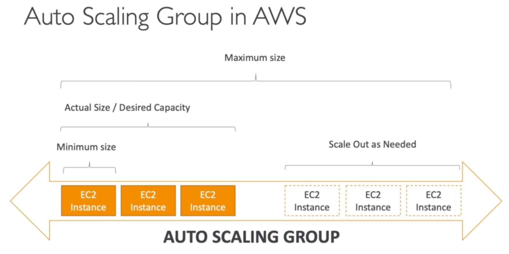
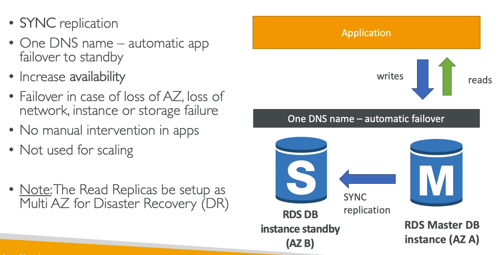
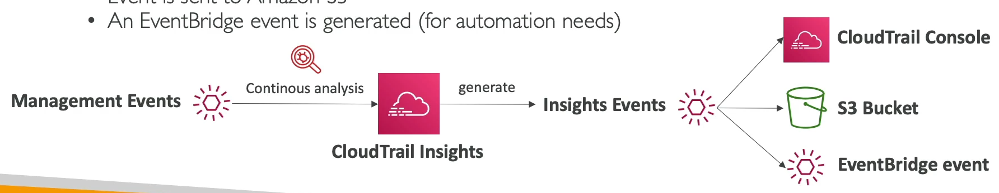
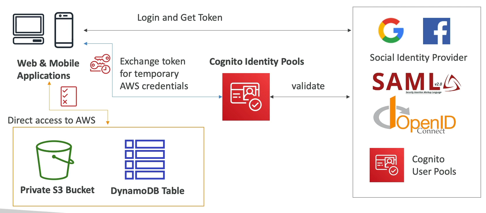
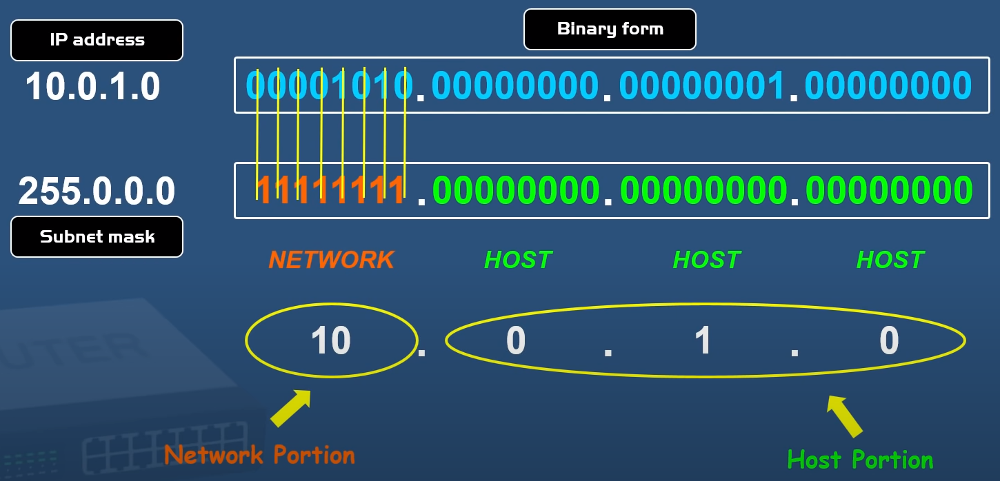

- Availability Zones are composed of one or more discrete data centers with redundant power, networking, and connectivity
- Software as a Service (SaaS) = Manage everything and provides you with a client to interact with the service
- Platform as a Service (PaaS) = Manage Applications and Data
- Pricing Model = Pay as you go
- The 3 pricing fundamentals of AWS are Compute, Storage and Data transfer out of the AWS Cloud
- AWS Compute Services: EC2, Lightsail, Lambda, Batch, Elastic Beanstalk, Serverless Application Repository, AWS Outposts, EC2 Image Builder.
- Types of Cloud Computing Deployments:
- Public Cloud - AWS, Azure, GCP
- Hybrid - Mixture of public and private
- Private Cloud (or On Premise) - you manage it in your datacenter
- Trade Capital Expense (CapEx) for variable expense: pay only when you consume resources instead of invest in data centers. No sunk cost.
- Benefit from massive economies of scale
- Stop guessing about capacity
- Increase speed and agility: develop faster and focus only in your code
- Go global in minutes
- AWS is responsible for the security OF the cloud: management of data centers, security cameras, cabling, patching RDS operating system, etc.
- Exam tip: if you can do something in the AWS Console, you are likely responsible. If not, AWS is likely responsible. Encryption is a shared responsibility

- A user can belong to one or many groups
- The policies define the permissions of the user, groups or roles
- When a policy is attached to an individual user is called an inline policy
- IAM users are considered "permanent" because once their password, access key, or secret key is set, these credentials don't automatically rotate or change without human interaction
MFA
- Virtual MFA Device: Google Authenticator o Authy
- U2F security key: physical USB device
How to manage AWS
- AWS Console: UI accesible via web browser
- AWS SDK: package that allow a programming language to communicate with AWS
- AWS CLI: You need to install the AWS CLI and it allows you to do everything you can do in the web (AWS console).
- AWS CloudShell: Is an AWS CLI that you can launch in the web browser (when you are logged in). You can upload and download files to your
- AWS PowerShell: as if you are working in a machine
IAM Roles
- They are used to assign permissions to AWS services in order to perform action on your behalf
- A role can be used by either an IAM user in the same AWS account as the role or a user in a different AWS account
- A role can also be used by a web service that AWS offers; a prime example is Amazon EC2
- AWS doesn't allow users to add an IAM role to an IAM group at this time
IAM Federation
- You can combine existing user account with AWS. For example, when you log on to your PC (usually using Microsoft Active Directory), you can use the same credentials to log into AWS if you set up federation
- Identity Federation ses the SAML standard, which is Active Directory
Identities
They are the IAM resource objects that are used to identify and group. You can attach a policy to an IAM identity. These include users, groups, and roles.
Entities
They are the IAM resource objects that AWS uses for authentication. These include IAM users, federated users, and assumed IAM roles.
Principal
It is a person or application that uses the AWS account root user, an IAM user, or an IAM role to sign in and make requests to AWS.
Security Tools
- IAM Credentials Report (account-level) = a report (excel) that lists all your account's users and the status of their various credentials
- IAM Access Advisor (user-level) = shows the services permissions granted to a user and when those services were last accessed
AWS Root Account - This is the account created when you first set up your AWS account and it has complete admin access. Secure it as soon as possible and do not use it to log in day to day
- New users has no permissions when first created
- Four steps to secure your root account:
- Enable multi-factor authentication on the root account
- Create an admin group for your administrators, and assign the appropiate permissions to this group
- Create user accounts for your administrators
- Add your users to the admin group


What includes the Credentials Report

- You can comunicate with an EC2 instance via SSH with your prefered SSH client or with the option "EC2 Instance Connect" in the console (web browser).
- The minimum charge for an EC2 instance is 60 seconds, but there is no minimum uptime requirement for an EC2 instance once it has been enabled
- Instance metadata: is data about your instance that you can use to configure or manage the running instance (even programatically).
- EC2 user data: instance bootstraping script
Amazon Machine Image (AMI)
AMIs are templates for EC2 instances. They are docker like images to be run in EC2 instances. The AMI must be in the same region as that of the EC2 instance to be launched. If the AMI exists in a different region, you can copy that AMI to the region where you want to launch the EC2 instance. The region of AMI has no bearing on the performance of the EC2 instance. You can create a new AMI from an existing EC2 instance.
- EC2 Image Builder. Is a free service that help you to attach packages, roles and config other options to create a custom AMI.
EC2 instance types
- General porpuse: ideal for web servers. Good balance between compute, memory and networking.
- Compute optimized: great for compute-intensive tasks that require high performance processors.
- Memory optimized: fast performance for workloads that process large data sets in memory.
Security groups
- It is (kind of) a firewall that can be attached to any EC2 instance.
- It controls how traffic is allowed into or out of our EC2 instances. Can only contain ALLOW rules.
- You can attach several security groups to an EC2 instance.
- By default a security group deny any inbound traffick and allow any outbound traffic.
EC2 Purchasing options/Launch types
- On-Demand: pay as you go
- Reserved: (up to 70% discount) you commit to use the instance for one or three years with no, partial or all upfront payment:
- Standard: you cannot change the type of instance
- Convertible: you can change the type of instance
- Scheduled: you reserved only a specific period of the day, week or month. This is not a valid response on the exam. AWS currently has this messages in its web: "You cannot purchase Scheduled Reserved Instances at this time".
EC2 Spot Instance interruption notice: when Amazon EC2 is going to interrupt your Spot Instance, it emits an event two minutes prior to the actual interruption (except for hibernation, which gets the interruption notice, but not two minutes in advance, because hibernation begins immediately). The interruption notices are made available as a CloudWatch event and as items in the instance metadata on the Spot Instance. Interruption notices are emitted on a best effort basis
Spot fleet: is a collection of spot instances and, optionally, on-demand instances
Exam tip: Spot Instances with a defined duration (also known as spot blocks) are no longer available to new customers as of July 1, 2021
- Dedicated Instance: hardware dedicated to your use but you don't have control over instance placement.
- Dedicated Host: physical server fully dedicated to your use. You need to commit for a 3 years period. Any question that talks about special licensing requirements refers to this instance type.
AWS Outposts:
- Are server racks that offers the same AWS structure, services, APIs and tools to build your own applications on-premises just as in the cloud, so you can use the AWS cloud resources directly in your facilities
- AWS will setup and manage "Outposts racks" with your on-premise infrastructure and you can start leveraging AWS services on-premises
- You are responsible for the security of the racks
- Outposts racks are for large deployments and Outpost servers are for smaller deployments
AWS Wavelength
- It consist of infrastrcture deployments embedded within the telecommunication provider's datacenters at the edge of the 5G network
- It brings AWS services to the edge of the 5G networks improving performance and lowering the latency.
Cost Allocation tags
- Allows you to group resources with the same tag and generate a Cost and Usage Report (the most detailed cost report in AWS) for group (or tag)
- You must activate both types of tags (AWS generated and user-generated) separately before they can appear in Cost Explorer or on a cost allocation report
Cost Explorer - It helps you to visualize, understand and manage your AWS costs and usage over time (monthly, hourly or resource level granularity)
- It gives you a very in-depth process of exploring your costs
- It also allows you to view costs from the past 12 months, current detailed costs, and forecasts costs for up to 3 months based on current usage
Cost and Usage Report - Provides the most detailed and comprehensive report for AWS cost and usage
- Cost and Usage Reports are delivered daily
- All billing data metric for any region is stored in CloudWatch us-east-1. It's for actual costs not for projected costs
Budget
- Create budget and send alarms when costs (current or forecasted) exceed the budget
- It allows you to set a limit to your bill
- You can also set actions when the thresholds are exceeded. Budget could be of three types: usage, costs or reservation
AWS Compute Optimizer
- It helps you identify the optimal AWS resource configurations, such as Amazon EC2 instance types, Amazon EBS volume configurations (EBS is NOT a compute service), and AWS Lambda function memory size
- It reduce costs and improve performance by recommending optimal AWS resources for your workloads with ML
- It can lower your costs by up to 25% and its recommendations can be exported to S3
- AWS Compute Optimizer analyzes the configurations and utilization metrics of your AWS resources, including Amazon EC2
- It can generate reports on whether your resources are optimal or not
- It can also generate optimization recommendations to reduce the cost and improve the performance of your workloads
License Manager
- It helps you manage software licenses on AWS and on-premise
- Useful to prevet license abuse and overcharges
AWS Service Catalog
- AWS Service Catalog allows organizations to create and manage catalogs of IT services that are approved for use on AWS
- These IT services can include everything from virtual machine images, servers, software, and databases to complete multi-tier application architectures
- For example you can create a constraint for the deploy of EC2 instances so the users you choose to apply the constraint can only launch an instance when compliant
- You can also hide options in the console allowing the user to only modify the options needed
AWS Proton
- It's a two-pronged automation framework to help your team achieve:
- Automated infrastructure as code provisioning and deployment of serverless and container-based applications
- Standardized infrastructure
- Deployments integrated with CI/CD
- AWS Proton identifies all existing service instances that are using an outdated template version for you. As an administrator, you can request AWS Proton to upgrade them with one click
infrastructure and deployment tooling for serverless and container-based applications
- As an application developer, you can select from the available service templates to automate your application or service deployments
- Platform teams can use AWS Proton and versioned infrastructure as code templates. They can use these templates to define and manage standard application stacks that contain the architecture, infrastructure resources, and the CI/CD software deployment pipeline
- When developers use the AWS Proton self-service interface to select a service template, they're selecting a standardized application stack definition for their code deployments. AWS Proton automatically provisions the resources, configures the CI/CD pipeline, and deploys the code into the defined infrastructure
AWS Health
- It provides ongoing visibility into your resource performance and the availability of your AWS services and accounts
- You can use AWS Health events to learn how service and resource changes might affect your applications running on AWS
- AWS Health provides relevant and timely information to help you manage events in progress
- AWS Health also helps you be aware of and to prepare for planned activities
- The service delivers alerts and notifications triggered by changes in the health of AWS resources, so that you get near-instant event visibility and guidance to help accelerate troubleshooting
- The AWS Health Dashboard is available for all AWS customers at no additional cost
- If you have a Business, Enterprise On-Ramp, or Enterprise Support plan, you can use the AWS Health API to integrate with in-house and third-party systems
- Exam tip: questions about servic alerts or notifications of EC2 hardware maintenance reboots will leverage AWS Health in some manner


- Private IP: You can use it internally in your network but not in the internet.
- Public IP: You can use it to connect to the internet.
- Elastic IP: AWS offers (for rent) Public IPs that you can attach to an EC2 instance or other service in order to have a pubilc static IP no matter if the instance is restarted.
- Spot Fleet: is a set of Spot Instances and optionally On-demand Instances. It allows you to automatically request Spot Instances with the lowest price.
- EC2 Placement Groups: It allows you to control the EC2 instances placement. Only certain types of instances can be launches in a placement group (compute optimized, GPU, memory optimized, storage optimized). You can't merge placement groups. When you create a placement group you can specify one of these strategies:
- Cluster: clusters instances into a low latency group in a single AZ. Good for applications that need low latency but has the con of low availability. AWS recommends homogenous instances within cluster placement groups. This strategy can't span multiple AZs
- Spread: spread instances across underlying hardware - racks (max 7 instances per group per AZ). Good for applications that needs high availability but has the con of a higher latency. This strategy can span multiple AZs
- Partition: spread instances across many different partitions (which rely in different sets of racks) within an AZ. Scales to hundreds of EC2 instances per group. Good for big data applications which are partition aware. This strategy can span multiple AZs
- Elastic Network Interfaces (ENI): Logical component in a VPC that represents a virtual netwrk card. It's bound to a specific AZ. You can created it attached to an EC2 instance (it's deleted when the instance is terminates) or on the fly in order to attach it to an EC2 instances or another one for failover. It can have th following attributes:
- Primary private IPv4 and one or more secondary IPv4
- One elastic IPv4 per private IPv4
- One public IPv4
- One or more security groups
- A MAC address
- EC2 Hibernate: It help you to have shorter instance start times placing the in-memoty (RAM )state in the attached EBS volume (the volumen must be an EBS and it must be encrypted). Is available for on-demand, reserved and spot instances. Not supported for are metal instances. The instance RAM must be less than 150 GB. An instance can't be hibernated for more than 60 days.


- Is a network drive you can attach to your instances while they run (might be a bit of latency)
- The first EBS volumen attached to an EC2 instance is considered a root volume and its default behaviour is to be deleted on EC2 instance termination. If you have more tha one EBS volume attached t the same instance the default behaviour (delete volume) is only applied to the root volume.
- Is a recommended storage option when you run databases on an instance
- Can be attached to only one EC2 instance at a time but one instance can have several EBS volumes attached
- Only work in one availability zone. You can create a snapshot to migrate a volume from one AZ to another
- You can resize EBS volumes on the fly as well as changing the volume types
- About volume type: gp2 and gp3 are general porpuse volumes. io1 and io2 are great for operations that needs high I/O operations per second. HDD is good if you are looking for a cheaper solution and the performance is not your main concern.
- Only EBS volume types gp2, gp3, io1 and io2 can be used as boot volumes
- Multi-attach: an io1 or io2 EBS volume can be attached to multiple instances in the same AZ. Can attach up to 16 instances at a time. Must use a filesystem that is cluster aware
- gp2 and gp3 increase its I/O when storage size is increased. io1 and io2 increase its I/O independently.
- You can create an encrypted EBS volume (all the encryption is handled by AWS leveraging KMS keys) which means encryption of data inside the volume, all data in-flight between volume and instance, snapshot and volumes created from an ecrypted snapshot.
- Amazon EBS Snapshots are a point in time copy of your block data. For the first snapshot of a volume, Amazon EBS saves a full copy of your data to Amazon S3. EBS Snapshots are stored incrementally, which means you are billed only for the changed blocks stored.
- All snapshots are encrypted. All the data in flight moving between the EC2 instance and the volume is encrypted
- When you encrypt an EBS volume, the encryption operations occur on the servers that host EC2 instances, ensuring the security of both data-at-rest and data-in-transit between an instance and its attached EBS storage
- Volumes exist in EBS, qhereas snapshots exist in S3
EC2 Instance Store
- Is a high performance block storage attached to an EC2 instance. Is ephemeral, is deleted when the EC2 instance is terminated.
EFS - Elastic File System
- Is an elastic file system for Linux-based workloads
- Supports the Network File System version 4 (NFSv4) protocol
- No upfront payments. You pay for the amount of data (per GB) that you use
- Can support thousand of concurrent NFS connections
- Can be mounted in hundreds of EC2 instances even if they belong to multiple AZs.
- Can be directly used with on-premises systems.
- Offers high availability, scalability but at a higher cost (3x expensive than EBS gp2). EC2 instances can access files on an EFS file system across many Availability Zones, Regions and VPCs
- Can scale up to petabytes wiht read-after write consistency. No action is needed to scale, as AWS will automatically size EFS based on your usage
- It has an Infrequent Access storage Class that is cost-optimized for files accessed less frequently. Data stored on the Infrequent Access storage class costs less than Standard and you will pay a fee each time you read from or write to a file.
FSx
- FSx for Windows File Server is a fully managed, highly reliable, and scalable Windows native shared file system.
- FSx for Lustre (Linux and Cluster) is a fully managed high peformance, scalable file storage for High Performance Computing (HPC). It can scale to hundreds of GB/s.
EBS drive type
EBS drive type - gp2 and gp3
EBS drive type - io1 and io2
EBS drive type - st1 and sc1
EFS storage classes

EFS performance classes

- High availability = run your application or system in at least two data centers
Elastic Load Balancer - ELB
- Provide SSL for several EC2 instances
- Do regular health checks to your instances
- Some load balancer can be setup as internal (private) or external (public)
- Listeners: A listener check for connection requests from clients, using the protocol and port you configure
- Rules: determine how the load balancer route requests to its registered targets. Each rules consist of a priority, one or more actions, and one or more conditions
- Target groups: each target group routes requests to one or more registered targets, such as EC2 instances, using the protocol and port number you specify
- The most secure way of ensuring only the ALB can access the EC2 instances is referencing the ALB by security group in rules.
- AWS offers three kind of load balancers:
-
Classic load balancer - CLB (slowly retiring) - layer 4 & 7:
- When created receive a fixed hostname (XXX.region.elb.amazonaws.com)
- In order to add targets you need to add them directly to the load balancer's configuration (not using target group)
- Can make health checks via HTTP, HTTPS or TCP protocols
- Provides static DNS -
Application load balancer - ALB (HTTP / HTTPS only) - layer 7:
- You can set a target group that list the EC2 instances, ECS tasks, lambda functions o IP Addresses where is going to route the traffic to
- It can route to differente target groups
- The health checks are at target group level
- You can configure responses from the load balancer, is not required to route to a target group
- Provides static DNS
- To get the client's IP address, ALB adds an additional header called "X-Forwarded-For", it contains the client's IP address
- To use an HTTPS listener, yu must deploy at least one SSL/TLS server certificate on your load balancer. The load balancer uses a server certificate to terminate the frontend connection and then decrypt requests from clients before sending them to the targets
-
Network load balancer - NLB (ultra high performance, allows for TCP and UDP) - layer 4:
- Less latency than Application load balancer and can handle millions of requestsper second
- Has one static IP per AZ and supports assigning elastic IP (helpful for whitelisting specific IP)
- Their target groups support EC2 instances, IP addresses (only private IPs) and Application load balancer
- Can make health checks via HTTP, HTTPS or TCP protocols
- Only Network Load Balancer provides both static DNS name and static IP
- Use when you need extreme performance or you need protocols not supported by ALB
- Network Load Balancers can decrypt traffic, but you will need to install the certificate on the load balacer -
Gateway load balancer - GLB - layer 3 (network layer) IP Protocol:
- Deploy, scale and manage a fleet of 3rd party netwotk virtual appliances (for example: firewalls, intrusion detection systems,
payload manipulation, etc)
- It's normally used in combination with other type of load balancer (see image)
- It uses the GENEVE prtotocol on port 6081
- Their target groups support EC2 instances and IP addresses (only private IPs)
- Combine the following functions: Transparent network gateway (single exit/entry for all traffic) and Load balancer (distributes trafic to your virtual appliances)
- During the ELB config process you can:
- Make the ALB available in different subnetworks (ACs)
- Attach security groups
- Set the http port that the ALB is listening to
- Set the Target Group (group of EC2 instances) for the ALB to redirect the traffic
- Exam tip: For ALBs, the traffic will be sent at the target gtoup level, not to individual EC2 instances (unless you configure a target group with just one EC2 instance)
- Exam tip: You may see scenario-based questions where you remove an EC2 instance from a pool, but the load balancer continues to direct traffic to that EC2 instance. To solve a scenario like this, disable sticky sessions
- Cross-zone load balacing: allows you to route the traffic to more than one AZ. See image for more details for each loadb balancer type
- SSL - Server Name Indication (SNI): SNI solves the problem of load multiple SSL certificates onto one web server (to serve ultiple websites). It requires the client to indicate the hostname of the target server in the initial SSL handshake in order to provide the right certificate. It only works for ALB and NLB, to apply multiple SSL certificates with CLB you must create multiple CLB
- Connection drainning (for CLB) or Deregistration Delay (for ALB and NLB): use it to ensure that a Load Balancer stops sending requests to instances that are de-registering or unhealthy, while keeping the existing connections open. This enables the load balancer to complete in-flight requests made to instances that are de-registering or unhealthy. Enable deregistration delay keep existing connections open if the EC2 instance becomes unhealthy. Disable deregistrtion delay the load balancer inmediately close connections to EC2 instances that are de-registered or have become unhealthy. When you enable connection draining, you can specify a maximum time for the load balancer to keep connections alive before reporting the instance as de-registered. The maximum timeout value can be set between 1 and 3,600 seconds (the default is 300 seconds). When the maximum time limit is reached, the load balancer forcibly closes connections to the de-registering instance
Auto Scaling Groups - ASG
- Scale out means add instances. Scale in means remove instances
- You can set a minimum, maximum and desired size and the ASG scales accordingly. This configuration is called an scaling policy
- The goal is to setup as many EC2 instances as you set in the desired size without breaking the minimum and maximum sizes (limits)
- It can replace an unhealthy instance and register new instances to a load balancer
- After a scaling activity happens, you are in the cooldown period (default to 300 seconds). During the cooldown period the ASG will not launch or terminate additional instances (to allow for metrics to stabilize)
- Good metrics to scale on: CPU utilization, request count per target, average network in / out, custom metrics that better fit your use case
- Auto Scaling will balance your EC2 count across the AZs you list (high availability)
- You can create an ASG using a launch template, you must create a launch template with the parameters required to launch an EC2 instance. These parameters include the ID of the Amazon Machine Image (AMI) and an instance type
- A launch template provides full functionality for Amazon EC2 Auto Scaling and also newer features of Amazon EC2 such as the current generation of Amazon EBS Provisioned IOPS volumes (io2), EBS volume tagging, T2 Unlimited instances, Elastic Inference, and Dedicated Hosts
- If you need to change the AMI included in a launch template, create a new version of the launch template with the updated AMI
- When you use Elastic Load Balancing with your Auto Scaling group, it's not necessary to register individual EC2 instances with the load balancer. Instances that are launched by your Auto Scaling group are automatically registered with the load balancer. Likewise, instances that are terminated by your Auto Scaling group are automatically deregistered from the load balancer
- Scaling Strategies:
- Manual Scaling: manually set the ideal sizes
-
Dynamic Scaling:
- Simple / Step Scaling: set alarms in CloudWatch and when the alarm is triggered then add or remove instances.
- Target tracking scaling: tracks a metric. For example: I want the average ASG CPU to stay at around 40%.
- Scheduled scaling: anticipate a scaling based on known usage patterns. For example: Increase the min capacity at 5pm on fridays.
- Predictive Scaling: use machine learning to predict future traffic ahead of time and automatically provisions the necessary EC2 instances
Cross-zone load balancing


- Stands for Relational Database Service. It's a managed DB service
- It allows you to create DBs in the cloud that are managed by AWS
- You can't SSH into an RDS instance
- Support the following RDBMS: Postgres, Mysql, Mariadb, oracle or sql server
- Support storage auto scaling: helps you increase your DB storage dynamically. You hace to set maximum storage threshold (maximum limit for DB storage). Automatically modify storage if: free storage is less than 10% of allocate storage, low-storage lasts at least 5 minutes and 6 hours have passed since last modification
- Read replicas: it's main porpuse is scale the read capacity of your database (not availability). The replicas update is asynchronous (eventual consistency). You can have up to 5 read replicas. In AWS there is a cost when data goes from one AZ to another, for RDS within the same region you don't pay this fee. Read replicas add new endpoints with their own DNS name. We need to change our application to reference them individually to balance the read load. You can't create encrypted read replicas for an uncreypted database
- Multi AZ (disaster recovery): it's main porpuse is increase availability (not used for scaling) creating a failover DB that is always up to date (data replication is synchronous). The key part is the DNS name for the DB that allows the use of the failover in case of failure. You can change from a Single-AZ to a Multi-AZ configuration with zero downtime, internally AWS create the failover DB from a snapshot of the original DB and set up the syncronization between them. Also a read replica can be set up as Multi AZ for disaster recovery
- Advantages of using RDS over configure a DB on an EC2 instance by yourself:
- Automated provisioning (OS patching
- Continuous backups and restore to specific timestamp (Point in time restore)
- Monitoring dashboard
- Read replicas for improved read performance
- Multi AZ setup for DR (disaster recovery)
- Maintenance windows for upgrades
- Scaling capability
- Storage backed by EBS (gp2 or io1)
- RDS Backups: you can manually create a DB snapshot and the retention of this backup is as long as you want. When activate automated backup you have daily full backup of the database (during the maintenance window), transaction logs are backed-up by RDS every 5 minutes, ability to restore to any point in time (from oldest backup to 5 minutes ago) and 1 to 35 days of retention (set to 0 to disable automated backups).
Trick: In a stopped RDS database, you will still pay for storage. If you plan on stopping it for a long time, you should snapshot and restore instead.
Aurora
- It's a propietary technology of AWS optimized for the cloud (performance improvement - 5x over MySQL and 3x over PostgreSQL).
- Only supports MySQL and PostgreSQL. It doesn't support MariaDB.
- With Aurora 2 copies of your data are contained in each AZ, with a minimum of 3 AZs (6 copies of your data)
- Is 20% more expensive than RDS but also more efficient.
- Its storage grows automatically in increments of 10GB up to 12 8TB.
- Can have up to 15 replicas and the replication process is faster (sub 10ms).
- Have one Writer Endpoint that internally points to the master node (the only one that can write) and one Reader Endpoint that load balance the client's connections to the read replicas.
- Auroa has autmates backups turned on by default. You can also take snapshots with Aurora. You can share Aurora snapshots with other AWS accounts
- The master (writer) node is replaced with any read replica on failure.
- Read replica auto scaling: based on CPU usage
- There are three types of read replica: Aurora replicas, MySQL replicas, and PostgreSQL replicas. Automated failover is only available with Aurora replicas
- Custom endpoints: allows you to control which read replica responds to each custom endpoint you create.
- Aurora serverless: automatic instantiation and auto scaling based on actual usage. The client connect to "Proxy fleet" (managed by Aurora) and it scales the DB based on current usage.
- Aurora Multi-master: the default failover mechanism promotes a read replica as the new master. With multi-master every node does reads and writes which gives you the ability to inmediately failover from one node to another.
- Global Aurora: see image. It offers Aurora as a global (multi region) service. Typical cross-region replication takes less than one second.
- Aurora Machine Learning: simple, optimized, and secure integration between Aurora and AWS ML Services (Amazon SageMaker, Amazon Comprehend)
- To manually delete your Aurora cluster, you first need to delete all the read and write replicas.
- Aurora Backups: you can manually create a DB snapshot and the retention of this backup is as long as you want. When enable automated backups you can choose between 1 to 35 days of retention and once enabled it can't be disabled. The automated backups offers you point in time recovery based on the retention days you configure.
-Aurora Database Cloning: create a new aurora cluster form an existing one faster than snapshot and restore. Useful to create staging databases from a production one without impacting performance.
- RDS / Aurora Restore options: restoring a backup or a snapshot creates a new database. Restoring from an S3 bucket creates a new database.
- RDS / Aurora security:
- At rest encryption: is managed using AWS KMS (must defined at launch time). If the master is not encypted the read replicas cannot be encrypted. To encrypt an unencrypted database go through a DB snapshot and restore as encrypted
- In-flight encryption: TLS-ready by default, use the AWS TLS root certificates client-side
- IAM Authentication: you can use IAM roles to connect to your database (instead of username / password). Not supported by Oracle databases.
- Security groups: use it to control network access to your RDS / Aurora database
- No SSH available: the only exception is RDS Custom
- Audit logs: can be enabled and sent to CloudWatch Logs for longer retention
RDS Proxy
- Fully managed database proxy for RDS. Serverless, autoscaling, highly available (multi-AZ)
- Support RDS (MySQL, Postgres, MariaDB) and Aurora (MySQL, Postgres)
- No code changes required for most apps
- Allows app to pool an share connections established with the database
- Improve database efficiency by reducing the stress on database resources (CPU, RAM) and minimize open connections (timeouts)
- Reduced RDS and Aurora failover time by up to 66%
- Enforce IAM authentication for database and securely store credentials in AWS Secrets Manager
- It's never plublicly accesible. Must be accessed from VPC
ElastiCache
- Fully managed service for Redis and MemCached
- AWS takes care of OS maintenance / patching, optimizations, setup, configuration, monitorign, failure recovery and backups
- Usign ElastiCache involves heavy application code changes
- Do not support IAM authentication. IAM policies in ElastiCache are only used for AWS API-level security
- You can set an token / password when you create a Redis cluster. This is an extra level of security for your cache (on top of security groups)
- Redis support SSL in-flight encryption
- MemCached support SASL-based authenticaiton
- Patterns for ElastiCache:
- Lazy loading: all the read data is cached, data can become stale in cache. Only when you don't have an entry in the cache the request pass to the actual database
- Write through: adds or update data in the cache when written to a DB (no stale data)
- Session store: store temporary session data in cache (using TTL features)
Important ports:
- FTP: 21
- SSH: 22
- SFTP: 22 (same as SSH)
- HTTP: 80
- HTTPS: 443
- PostgreSQL: 5432
- MySQL: 3306
- Oracle RDS: 1521
- MSSQL Server: 1433
- MariaDB: 3306 (same as MySQL)
- Aurora: 5432 (if PostgreSQL compatible) or 3306 (if MySQL compatible)

RDS Multi AZ 
Multi AZ vs Read Replicas
Aurora Features

Global Aurora

Aurora Machine Learning

Redis vs MemCached

- DNS: Domain Name System which translates the human friendly hostnames into the machine IP addresses. When you make a request with a human friendly hostname the DNS searches for the corresponding IP in a recursive way, from the root (right-most part of the url) to the domain name (left-most part of the url).
- Domain Registrars (and 3rd party domains): an organization that allows you to purchase and register domain names (Amazon, NameCheap, GoDaddy, etc.). The AWS registrar is called Amazon Registrar Inc. You can use Route53 just as a DNS service with a 3rd party domain or register your domain with AWS. In order to setup a 3rd party domain with Route53 you need to create a hosted zone an then change the DNS nameservers (NS records) in the domain registrar for the nameservers of the hosted zone in order to be able to manage the DNS record from the AWS console.
Time To Live - TTL: represents the time that an entry is going to be cached in the client to avoid request the DNS too often. If you set a high TTL the DNS (Route53) will receive less traffic but have the problem of outdated records whenever you need to change an IP address. If you set a low TTL your DNS is going to receive a lot of request which means a higher cost (Route53 charge you depending on the traffic). The TTL is mandatory for all types of records, except alias.
- Hosted Zones: a container for DNS records that define how to route traffic to a domain and its subdomains. It responds to DNS queries with the corresponding IP address. When you register (purchase) a domain, it automatically generate a hosted zone with its correspondingNS record. The cost for each hosted zone is 0,50 dollars per month. There are two types of hosted zones:
- Public: for public domain names you can create a public hosted zone which contains records that specify how to route traffic on the internet
- Private: for private domain names you can create a private hosted zone which contains records that specify how to route traffic within one or more VPCs
- Domain/subdomain name: e.g. example.com
- Record type: e.g. A or AAAA
- Value: the IP address
- Routing Policy: how Route 53 reponds to queries
- TTL: amount of time the record cache at DNS resolvers
- A: maps a hostname to IPv4
- AAAA: maps a hostname to IPv6
- AAAA: maps a hostname to IPv6
- CNAME: maps a hostname to another hostname. The target must have an A or AAAA record. Only works fot NON root domains
- Alias: is a record specific for Route53. Points a hostname to an AWS Resource.It works for root domains and non root domains. It's free of charge and offers native health check. An alias record is always of type A or AAAA for AWS resources. You can't set the TTL for this type of record, it's set automatically by Route53. You cannot set an alias for an EC2 DNS alias. See image for a list of possible targets for this type of record
- SOA: start of authority record includes administrative information (TTL, etc) about your zone, as defined by the domain name system (DNS). Anytime you set up a new zone, you'll need a new SOA record. And any time you transfer one DNS zone to another, you'll need that record too
- NS: Name Server for the hosted zone. Control how traffc is routed for a domain. Its is the DNS names or IP adresses of the servers you want to responds to the received queries for your hosted zone
- Health Checks: they are mainly for public resource. Health checks only pass when receive 2xx or 3xx status codes. Health checks can be set to pass / fail based on text in the first 5120 bytes of the response. Your firewall (e.g. security groups) needs to allow the Route53 health checks request. Health checks are integrated with CloudWatch so you can have health checks metrics. You can set SNS notifications to alert you about failed health checks. The Route53 health checks can monitor three types of resource:
- An endpoint: about 15 health checkers will check the endpoint health, if more than 18% of health checkers report the endpoint is healthy, Route53 considers it "healthy", otherwise is "unhealthy". You can set the interval for the health checks and a threshold (default is 3) that represents the times that health check result needs to be unhealthy in order to be marked the endpoint as unhealthy. Support TCP, HTTP and HTTPS. You have the ability to choose shich locations you want Route53 to use.
- Other Route53 health checks (calculated health checks): combine the results of multiple health checks into a single health check. You can use choose options based on logical operator such as AND, OR and NOT. It can monitor up to 256 child health checks. You need to specify how many child health checks need to pass in order to mark the resource as healthy
- CloudWatch metric (e.g. Dynamo throttle): they are useful to ealth check private hosted zones because Route53 health checkers are outside the VPC and they can't access private endpoints. In order to monitor private resources, you can create a CloudWatch Metric and associate a CloudWatch Alarm, then create a health check that checks the alarm itself
It doesn't refer to actual routing, like the load balancer routing. It refers to the info that is returned for a received DNS query:
- Simple: route traffic to a simple resource. Can specify multiple values and the client pick one of them randomly. It can't be associated with health checks
- Weighted: control the percentage of the requests that go to each resource (weight don't need to sum up to 100%). DNS records must have the same name and type. Can be associated with health checks. When assign weight 0 to a record Route53 stop to send traffic to that resource but if all records have weight 0, then all record will be returned equally
- Latency Based: redirect to the resource that has the least latency. Latency is based on traffic between users and AWS regions, so you need to select the region against the latency is going to be measured. Can be associated with health checks. Has a failover capability
- Failover: it switch the Ip address to the failver resource based on the status of a Route53 health check that you need to create beforehand. To set up a failover you create two A or AAAAA records, one marked as Primary and the failover marked as Secondary, both records needs to have same record name.
- Geolocation: on configuration specify location by continent, country or US state and the DNS is going to route the traffic to the specified IP address based on where the user is actually located - match with the configured location (if there's overlapping more precise location is selected). You should create a record with location = default in case thre's no match on location. Can be associated with health checks
- Geoproximity (using Route53 traffic flow feature): similar to geolocation but you can assign a "bias" to each record. The bias add more weight to the record when routing traffic so you can control the amount of traffic that is going to be routed to the specified resource based on user location and bias. The bias can be set from -99 (negative values) to 99. See images.
- Multi-value answer: used when routing traffic to multiple resources. Route53 return multiple values/rsources. Can be associated with health checks (return only values marked as healthy). up to 8 healthy values can be returned for eahc multi-value query. This is not a substitute for a load balancer because the idea is that the client can load balance (default behaviour when a client receive multiple values for a single record), not your backend

Route53 Hosted Zones
Alias record targets

Geoproximity routing policy - to a user that has the same (or similar) geoproximity to both resources (DNS records) the bias helps you redirect traffic to the region with higher bias
- Starts with a t2.micro EC2 instance wiht an elastic IP in case case that we need to restart the EC2 instance and preserve the same public IP
- Then our app is getting more traffic
- We make our EC2 instance an m5.large (vertical scale). We need to terminate the instance an create a new one with the new type, therefore we experience a downtime while upgrading the instance
- Then the app become really popular and we decide to scale horizontally. Let's say 3 EC2 instances with their own elastic IP attached. Support the current traffic but it's hard to continue scaling
- We decided to change the elastic IP approach adding a domain for our app and routing the traffic with Route53 (A record with TTL of 1 hour
- We have the problem that when one of our instances is not available the clients still try to get to the instance beacause of the TTl of 1 hour.
- To solve the issue we decide to group all the instances in a single AZ with a security group (private) that is only accesible by a load balancer + health checks thta we also add for this purpose
- Then we found out that add and remove instances manually is really hard. To deal with this, we decide to add an auto-scaling group
- We fear that our app will be down due to a disaster. Therefore, we decide to move our instances to different AZs with a multi-AZ load balancer
- After some time running the app in production, we notice that most of the time we can operate with just 2 EC2 instances up. This lead us to change the type of two instances to reserved instance for cost savings
- MyClothes.com (stateful app) It's basically a shopping cart where users have their details. The goal is to scale the app keeping it as stateless as possible
- The architecture of the app includes several EC2 instances with an auto-scaling group fronted by a load balancer
- The users have the problem that their data is lost on each request beacause the state is managed by instance and the load balancer route the request to different EC2 instances
- The first proposed solution for this issue was to use sticky sessions (session affinity) on the load balancer. This approach solve th issue until an EC2 instance is terminated
- In order to address this last problem, we decide to go one step further and manage all the cart info with cookies, so the client always has the info available a sends it to our backend on each request. This way our app is stateless but as the cart grows the requests become heavier
- We need a way to take off the load of the cart data on the client side and therefore manage this info in the backend. We decide to establish server sessions with cookies and leveraging a cache (ElastiCache) where we keep up to date the cart data for each user. See Image
- The last solutions works great so we decide to change the storage to something more robust like an RDS
- Then the traffic to our apps increase a lot, because of that we set a couple of read replicas
- We also consider a "write through" approach with a cache (hit the cache at first, if the cache has an entry it returns the info but if not the query goes to the RDS and update the info in the cache) but it has the downside of maintaining the cache which is always hard
- Afterward, we decide that we need to be ready for a disaster in our current AZ, and that's why we setup a multi-AZ load balancer
- Our last concern was the security. We decided to improve the cnfigurations of our security group so they can only allow connections from one party. EC2 instances only allows traffic from the load balancer and the ElastiCache and RDS instances only allow traffic from/to the EC2 instances
- MyWordPress.com The conclusion for this case is that EBS volumes are great for a single instanc but they don't scale very wel. For distributed application (our EC2 instances behind a load balancer) is a better option an EFS with an ENI configured in each EC2 instance to point to our EFS storage
- Instantiating Applications Quickly: this can be achieved with a combination of a Golden AMI and EC2 User Data (the script that runs on intance bootstrap). When it comes to databases and EBS volumes, the best approach is to restore from a snapshot.
- Golden AMI: is an AMI that you standardize through configuration, consistent security patching, and hardening. It also contains agents you approve for logging, security, performance monitoring, etc.
Elastic Beanstalk: it's a managed service that uses different resources (EC2, ASG, ELB, RDS, etc) to deploy an application handling automatically capacity provisioning, load balancing, scaling, application health monitoring, etc. With Elastic Beanstalk just the application code is the responsibility of the developer (Platform as a Service - PaaS). Beanstalk is free, you only pay for the underlying resources it provision. Behind the scenes it leverages CloudFormation to create a stack for your application. It will automatically replace instances that fail. It will deploy and update your applications for you. You maintain full control over all of your architecture.
Beanstalk Components
Beanstalk Webserver Tier vs Worker Tier

- Availability: measures how ready a service is for respond to requests. In S3 the availability varies depending on storage class
- The bucket's name must be globally unique. The naming convention comprehends: no uppercase, no undescore, 3-63 characters long and not an IP address.
- S3 is a globla service but the buckets are defined at the region level
- The buckets are private by default. You need you make it publicly accesible attaching it a policy (that can be created with the Policy Generator).
- The objects has some limits: max size of 5TB. Must be a "multi-part upload" if uploading more than 5GB
- Each object has metadata, a list of text key/vaue pairs with system or user metadata. The objects can also have up to 10 tags (that can be used to manage security or lifecycle) and a verdion id (if versioning is enabled).
- S3 versioning: allows you to maintain a history of the files stored in S3, so you can rollback any unintended change. Any file that is not versioned prior to enabling versionnig will have version "null". Versioning is not enabled by default on new S3 buckets because it will store more data and increase your costs for storage. Versioning cannot be disabled once enabled, only suspended. It can be integrated with lifecycle rules to enable scenarios such as setup a rule that stores all your previous object versions in the lower cost Glacier storage
- S3 cross / same region replication (CRR/SRR): must give proper IAM permissions and enable versioning in order to use this S3 feature (the version IDs are replicated). It basically replicates the data from one S3 bucket into another bucket that can even be in a different account. Copying is asynchronous. It's worth mentioning that files that already exist in the bucket before enabling the replication aren't going to be copied to the new bucket. To replicate existing objects you can use S3 Batch Replication (the console gives you the option when enabling replication). The replication feature has no "chaining" of replication; it means that if bucket 1 is replicated into bucket 2, which has replication into bucket 3, then object created in bucket 1 are not replicated in bucket 3. If you want to restore an versioned object you can do so deleting the "delete marker" version, by defualt the delete markers are not replicated but you can enable the delete markers to be replicated (this doesn't apply to a permanent delete of an object)
- Amazon S3 security options:
- IAM policies (user-based): which API calls should be allowed for a specific user from IAM
- Bucket Policies: bucket wide rules. Allow cross-account rules. Explicit DENY in an IAM Policy will take precedence over an S3 bucket policy.
- Object Access Control List (ACL): finer grain control (can be disabled)
- Bucket Access Control List (ACL): less common (can be disabled)
- Encryption: encrypt the objects using encryption keys
- General porpuse: used for frequently accesed data (offers low latency and high throughput). Can sustain two concurrent facility failures (99,99% availability)
-
Infrequent Access: used for data that is less frequentlly accesed but requires rapid access when needed. There two types of IA
storage:
- Standard-IA: 99,9% availability. Good for disaster recovery and backups.
- One Zone-IA: 99,5% availability. Stored in only one AZ so the data is lost when the AZ is destroyed (earthquake, etc) -
- Glacier: low-cost object storage meant for archiving/backup. Pricing is calculated for storage + object retrieval cost. Within this
storage class AWS offers three tiers:
- Instant Retrieval: milisecond retrieval, great for data accesed once a quarter. Minimum storage duration is 90 days
- Flexible Retrieval: this tier offers three retrieval types. Expedited (1 to 5 minutes), Standard (3 to 5 hours) and Bulk(5 to 12 hours). Minimum storage duration is 90 days
- Deep Archive: his tier offers two retrieval types. Standar(12 hours), and Bulk (48 hours - the retrieval of these objects is free). Minimum storage duration is 180 days - Inteligent Tiering: has an small monthly monitoring and auto-tiering fee. Moves objects automatically between access tiers based on usage. See image for default config.
S3 Inteligent Tiering
S3 Storage Classes Comparison
- The way of read a policy statement is the following: The "principal" is Allow/Deny ("effect") to perform the specified "action" on the specified "resource"
- You can create a policy with the help of the AWS Policy Generator. https://awspolicygen.s3.amazonaws.com/policygen.html
- You can attach an existing policy or create a new one.
- When it comes to Roles and Users, you can attach inline policies unless is a better solution to declare the policy globally an then attach it to the entity (Role or User).
- AWS Policy Simulator: you can test and troubleshoot identity-based policies, IAM permissions boundaries, Organizations service control policies (SCPs), and resource-based policies
- EC2 instance metadata: it's possible to make an API request from, and only from, an EC2 instance to know their metadata. It can be done requesting the url http://169.254.169.254/latest/meta-data. It works as if you are navigating a folders structure, the results you receive from the request can have a forward slash at the end, meaning that have more info inside it (kindof a folder). You can retrieve the IAM Role name from the metadata, but you cannot retrieve the IAM Policy
AWS SDK:
- We have to use an SDK when coding against AWS Services such as DynamoDB
- Fun fact... The AWS CLI uses the Python SDK (Boto3)
- If you don't specify or configure a default region when using an SDK, then us-east-1 will be chosen by default
Is a set of rules that define actions that Amazon S3 applies to a group of objects, so that they are stored cost effectively throughout their lifecycle. A good first step to put together or improve lifecycle rules is the S3 analytics, it helps you decide when transition objects to the right storage class, the report is update daily (24 to 48 hours to start seeing data analysis) with recommendations for Standard and Standard-IA (does NOT work for One Zone-IA or Glacier). There are two types of action for lifecycle rules:
- Transition actions: these actions define when objects transition to another storage class. For example, you might choose to transition objects to the S3 Standard-IA storage class 30 days after creating them, or archive objects to the S3 Glacier Flexible Retrieval storage class one year after creating them.
- Expiration actions: these actions define when objects expire. Amazon S3 deletes expired objects on your behalf.
S3 Requester Pays
In genral, bucket owners pay for all Amazon S3 storage and data transfer cost associated with their bucket. With requester pays buckets, the requester instead of the owner pays the cost of the request and the data download from the bucket. Helpful when you want to share large datasets with other accounts. The requester must be authenticated in AWS (cannot be anonymous)
S3 Event Notification
You can use the Amazon S3 Event Notifications feature to receive notifications when certain events happen in your S3 bucket (e.g. S3:ObjectCreated). This feature allows name (or path) filtering. You canc reate as many notifications as desired. The notification is tipically delivered within seconds but can sometimes take a minute or longer. The destination for the notifications can be SNS, SQS o Lambda. There is another destination option which is EventBridge.
S3 Performance (see images)
S3 Select and Glacier Select
Amazon S3 Select le permite utilizar instrucciones de lenguaje de consulta estructurada (SQL) simples para filtrar el contenido de los objetos de Amazon S3 y recuperar exactamente el subconjunto de datos que necesita (up to 400% faster and 80% cheaper). Si utiliza Amazon S3 Select para filtrar estos datos, puede reducir la cantidad de datos que Amazon S3 transfiere, lo que reduce tambin los costos y la latencia para recuperarlos.
Amazon S3 Select funciona con objetos almacenados en formato CSV, JSON o Apache Parquet. Tambin funciona con objetos comprimidos con GZIP o BZIP2 (solo para objetos CSV y JSON), as como con objetos cifrados del lado del servidor. Puede especificar el formato de los resultados como CSV o JSON, y tambin puede determinar cmo se delimitan los registros en los resultados.
Amazon S3 Inventory
It's one of the tools Amazon S3 provides to help manage your storage. You can use it to audit and report on the replication and encryption status of your objects for business, compliance, and regulatory needs. Amazon S3 Inventory does not use the List API to audit your objects and does not affect the request rate of your bucket. Amazon S3 Inventory provides comma-separated values (CSV), Apache optimized row columnar (ORC) or Apache Parquet output files that list your objects and their corresponding metadata on a daily or weekly basis for an S3 bucket or a shared prefix (that is, objects that have names that begin with a common string). You can configure multiple inventory lists for a bucket and what metadata to include in each one
S3 Batch Operations
Perform bulk operations on existing S3 objects with a single request. You can do any kind of operation (modify object metadata or properties, encrypt/unencrypt objects, invoke lambda functions to perform custom actions on each object, etc) on a list of objects. A job consist of a list of objects, the action to perform, and optional parameters. S3 batch operations manages retries, tracks progress, sends completion notifications, geenrate reports, etc. You can use S3 Inventory to get object list and use S3 Select to filter your objects
S3 Lifecycle Rules - Example 2
S3 Baseline Performance
S3 Performance Optimizations
S3 byte-range fetches
- Encryption in transit (SSL/TLS): S3 exposes two methods, HTTP (unencrypted) and HTTPS (encryption in flight). Of course HTTPS is recommended
- One way to force encryption is to use the default encryption option in S3 (including the x-amz-server-side-encryption in the request header). This method applies for SSE-S3 and SSE-KMS
- Another way to force encryption is to use a bucket policy and refuse any API call to PUT an S3 object without encryption. The bucket policy ensure encryption by checking:
- SSE-S3 and SSE-KMS: should include x-amz-server-side-encryption in the request header
- SSE-C: the encryption key must be included in the request
- Client side encryption: the uploaded object must be encrypted using the AWS Encryption SDK
- SSE-S3: encryption using keys handled, managed, and owned by AWS. Object is encrypted server-side. Encryption type is AES-256. Must set header "x-amz-server-side-encryption":"AES256" to request S3 to encrypt the object with AES256 mechanism
- SSE-KMS: encryption keys handled and managed by AWS KMS (Key Managemet Service). Two of the main KMS advantages are user control and the ability to audit key usage using CloudTrail. You have full control over the rotation policy of the encryption key. Object is encrypted server side. Must set header "x-amz-server-side-encryption":"aws:kms" to request S3 to encrypt the object with KMS mechanism. Using KMS you may be impacted by the KMS limits. When you upload (call GenerateDataKey KMS API) or download (call Decrypt KMS key) an object, the requests to KMS count toward the KSM quota per second (5.500, 10.000 or 30.000 req/s based on region) which can throws an throttle exception. Currently you cannot request a quota increase for KMS
- SSE-C: encryption using keys fully managed by the customer outside of AWS. AWS does NOT store the encryption key you provide. HTTPS must be used because the encryption key must be sent in HTTP headers for every request. HTTPS is mandatory for SSE-C
- Client Side Encryption: use client libraries such as Amazon S3 Client-Side Encryption Library. Clients must encrypt data themselves before sending to S3 and decrypt data themselves when retrieve data from S3. The customer fully manages the keys and encryption cycle
MFA Delete:
The multi factor authentication forces user to generate a code on a device before doing important operations. MFA will be required to permanently delete an object version or suspend versionig on the bucket, but it won't be required to less critical actions like enable versioning or list deleted versions. To use MFA Delete, versioning must be enabled on the bucket. In the AWS console the enabled/diabled indicator for MFA Delte is in the Bucket versioning section. Only the bucket owner (root account) can enable/disable MFA Delete. Currently, the MFA Delete for S3 can only be enabled via AWS CLI.
S3 Access Logs (Server Access Logging):
For audit porpuses, you may want to log all access to your S3 bucket. Any request made to S3, from any account, authorized or denied, will be logged into another S3 bucket. The data can be analyzed using data analysis tolls such as Amazon Athena, The target logging bucket must be in the same AWS region. The logging bucket must be a different bucket, if you set the same bucket as loggin bucket you create an infinite loop
S3 Presigned url:
A presigned url can be generated using the S3 Console, AWS CLI or SDK. Users given a pre-signed url inherit the permissions of the user that generated the URL for GET / PUT. The url expiration varies denpending on where you create it: S3 Console (1 minute up to 720 minutes - 12 hours), and for AWS CLI or an SDK (1 minute up to 604.800 seconds - 168 hours - default 3600 seconds)
S3 Glacier Vault:
Adopt a WORM model (Write Once Read Many). To activate it you need to create a Vault Lock Policy and then lock the policy itself (can no longer be changed or deleted). Helpful for compliance and data retention
S3 Object Lock:
Versioning must be enabled. Adopt a WORM model (Write Once Read Many) but this time you don't need to lock a policy. It block a single object version deletion for a specified amount of time. You need to set a retention period that specify the amoun of time that you protect an object (it can be extended). There are two retention modes:
- Compliance: object versions can't be overwritten or deleted by any user, including the root user. Object retentions mode can't be changed and retention periods can't be shortened
- Governance: most users can't overwrite or delete an object version or alter its lock settings. Some users have special permissions (given through IAM) to change the retention or delete the object
- Legal Hold: protect the object indefenitely, regardless of the retention mode you choose (independent from the retention mode). Can be freely placed and removed using the s3:PuObjectLegalHold IAM permission
S3 Access Point (see image): it'a layer that you configure on top of your S3 bucket to manage access to the specified prefixes
S3 Object Lambda:
Use AWS Lambda Functions to change the object before it is rettrieved by the caller application. Only one S3 bucket is needed, on top of which we create S3 Access Point and S3 Object lambda Access Point
S3 Access Point
S3 Object Lambda
- It's a Content Delivery Network (CDN)
- Improves read performance, content is cached at the edge. Improves users experience.
- The CDN is made of 216 points of presence (edges locations) globally
- Offers DDoS protection leveraging AWS Shield and AWS Application Firewall
- CloudFront is the only option to add HTTPS to a static website being hosted in an S3 bucket
- You can use CloudFront in front of:
-
S3 Bucket
- For distributing files and caching them at the edge
- Enhanced security with CloudFront Origin Access Control (OAC). OAC is replacing Origin Access Identity (OAI)
- CloundFront can be used as an ingress (to upload files to S3)
-
Custom Endpoint (HTTP)
- Application Load Balance
- EC2 Instance
- S3 Website
- Any HTTP backend you want
- ALB as an origin: with this pattern the EC2 instances can be private because the ALB has connectivity to a private VPC but the ALB must be public and allow the CloudFront IPs in its security group
- CloudFront Geo Restriction: you can restrict who can access your distribution by creating a list of countries to allows o deny access. The list can be an allowlist (whitelist) or a blocklist (blacklist). The country of the client is determined using a 3rd party Geo-IP database
- CloudFront Prices Classes: the cost of data outs per edge zone can vary. You can reduce the number of edge location of your distribution for cost reduction and this can be done with price classes:
- Price Class All: all regions - best performance
- Price Class 200: most regions, but excludes the most expensive regions
- Price Class 100: only the least expensive regions
AWS Global Accelerator
- Global Accelerator is a global service that supports endpoints in multiple AWS Regions
- It's a service in which you create accelerators to improve the performance of your applications for local and global users
- Depending on the type of accelerator you choose, you can gain additional benefits:
- With a standard accelerator, you can improve availability of your internet applications that are used by a global audience. With a standard accelerator, Global Accelerator directs traffic over the AWS global network to endpoints in the nearest Region to the client.
- With a custom routing accelerator, you can map one or more users to a specific destination among many destinations.
- Anycast IP: all the servers hold the same IP address and the client is routed to the nearest one.
- AWS Global Accelerator uses anycast IP. It leverage the AWS global network (via edge locations) to route your application.
- When you enable AWS Global Accelerator, 2 Anycat IPs are created for your application. Anycast IP will send the traffic to directly to the closest edge location of your users, then the edge locations sends the traffic to your application.
- It allow "client affinity" that is a kind of sticky session
- Offers support for health checks
- Support 4 enpoint types: Application Load Balancer, Network Load Balancer, EC2 instance and Elastic IP address
- You can assign a weight for each endpoint (a number from 0 to 255)
- AWS Global Accelerator gives you two static IP addresses. For this reason, whenever you the scenario talks about IP caching (reduce issues with customers caching old IP addresses) choose AWS Global Accelerator
CloudFront vs S3 Cross Region Replication

CloudFront Price Classes
AWS Global Accelerator Pros
CloudFront vs AWS Global Accelerator
- The rule of thumb for this services is: if it takes more than a week to transfer over the network, use SnowB Devices (Offline devices to perform data migrations)
- Highly-secure, portable devices to collect and process data at the edge, and migrate data into and out of AWS
- The client request the device. AWS deliver the device to the client's facility and then he shipped back the device
- All the Snow devices can run EC2 instances and AWS Lambdas functions (using AWS IoT Greengrass). Useful for edge computing
- Offer long-term deployment options. 1 or 3 years discounted pricing
- To apply for a Snow Family device you must create a "job" (could be to import to S3, export from S3 or for local compute and storage). You need to add your shipping preferences, choose the type of device you need, security preferences (create service roles, enable encryption, etc) and notification preferences (sns topic to receive emails about the status of your job)
- Snow devices cannot import directly into S3 Glacier. You must use an S3 first, in combination with an S3 lifecyvle policy
- AWS OpsHub: historically to use Snow Family devices you needed a CLI. For these cases you can use AWS OpsHub (a software to install on your computer/laptop) to manage your Snow Family devices. It helps you with: unlocking and configuring single or clustered devices, transfering files, launching and managing instances running on Snow Family devices, monitor device metrics (storage capacity, active instances on your device), launch compatible AWS services on your devices (ex: EC2 instances, AWS DataSync, Network File System - NFS, etc)
- The following are the types of devices that AWS Snow Family offers:
- SnowCone: 2CPUs, 4GB of memory (RAM), wired or wireless access, USB-C power using cord or the optional battery. recommended for use cases that needs up to 24 TB (online or offline). Smaller than SnowBall Edge (just 4.5 pounds or 2.1Kg). Small, portable computing, anywhere, rugged and secure, withstands harsh environments. Device used for edge computing, storage, and data transfer. 8TB of usable storage. Must provide your own battery and cables. Can be sent back to AWS offline, or connect it to internet and use AWS DataSync (pre-installed) to send data.
-
SnowBall Edge: physical data transfer solution. Mover Tbs or PBs of data in or out of AWS. It's an alternative to moving data
over the network. You pay per data transfer job. Provide block storage and Amazon S3-compatible object storage. With this device you
can possibly process the data while it's in transit. It comes in two flavours:
- SnowBall Edge Storage Optimized: up to 40 vCPUs, 80 GiB of RAM, 80TB of HDD capacity for block volume and S3 compatible object storage
- SnowBall Edge Compute Optimized: 52 vCPUs, 208 GiB of RAM, 42TB of HDD capacity for block volume and S3 compatible object storage
- SnowBall Edge Compute Optimized With GPU: useful for video processing or machine learning
- SnowMobile: better option if you are trying to transfer more than 10PB. It's an actual truck used to transfer exabytes of data (1EB = 1.000PB = 1.000.000TB). Each SnowMobile (truck) has 100PB of capacity and you can use several of them in parallel. Offer high security, temperature controlled, GPS monitoring, 24/7 video surveillance
Amazon FSx
- It's a fully managed services for launch 3rd party high performance file systems on AWS.
- You can choose the throughput per unit of storage, encryption, logging options, and backup and maintenance options when creating an FSx resource
- FSx deployment options:
- Scratch File System: temporary storage where data is not replicated (doesn't persist if file server fails. It support high burst (6x faster, 200MBps per TiB)
- Persistent File System: long term storage. Data is replicated within same AZ. Replace failed files within minutes
-
FSx for Windows (File Server):
- It's a fully managed windows file system share drive
- Support SMB protocol and windows NFTS
- Support integration with Microsoft Active Directory (useful to manage ACLs and user quotas)
- Can be mounted on linux EC2 instances
- Supports Microsoft's Distributed File System (DFS) Namespaces (group files across multiple FS)
- Scale up to tens of GB/s, millions of IOPS and hundreds of PBs of data
- Can be accessed from on-premises infrastructure (VPN or Direct Connect)
- Can be configured to be multi-AZ (high availability)
- Data is backed up daily to S3
- Storage options:- SSD: latency sensitive workloads (databases, media processing, data analytics, etc)
- HDD: broad spectrum of workloads (home directory, CSM, etc)
-
FSx for Lustre:
. Lustre is a type of distributed POSIX compliant file system, for large scale computing
- The name Lustre is derived from linux and cluster
- Good for machine learning and High Permoformance Computing (HPC)
- Sclaes up to hundreds of GB/s, millions of IOPS and sub-ms latency
- Can be accessed from on-premises infrastructure (VPN or Direct Connect)
- Seamless integration with S3. Can read S3 as a file system (through FSx). Can write the output of the computations back to S3 (through FSx)
- Storage options:- SSD: low latency. Good for OPS intensive workloads (small and random file operations)
- HDD: throughput intensive workloads (large and secuential file operations)
-
FSx for NetApp ONTAP:
- It's managed NetApp ONTAP on AWS
- NetApp is a provider for specialized storage solutions. They offer solutions for different sectors, including the cloud.
- ONTAP is NetApp's internal operating system, specially optimized for storage functions at both high and low levels
- File System compatible with NFS, SMB, and iSCSI protocols
- Move workload running on ONTAP or NAS (Network-Attached Storage) to AWS
- Works with: Linux, Windows, MacOS, VMware Cloud on AWS, Amazon Workspaces & AppStream 2.0, Amazon EC2, ECS and EKS
- Storage shrinks or grows automatically
- Support snapshots, replication, compression and data-deduplication at a low cost
- Offers point-in-time instantaneous cloning (helpful for testing new workloads) -
FSx for OpenZFS:
- Managed OpenZFS sile system on AWS
- OpenZFS is a CDDL licensed open-source storage platform that encompasses the functionality of traditional filesystems and volume manager
- File system compatible with NFS protocol (v3, v4, v4.1, v4.2)
- Used to move workloads running on ZFS to AWS
- Works with: Linux, Windows, MacOS, VMware Cloud on AWS, Amazon Workspaces & AppStream 2.0, Amazon EC2, ECS and EKS
- Scales up to one million IOPS with less than 0.5ms latency
- Support snapshots, compression at low cost
- Offers point-in-time instantaneous cloning (helpful for testing new workloads)
Storage Gateway
- Useful for hybrid clouds. Your infrastructure has a part on the cloud and other on-premises
- The storage cloud native options are: block storage (EBS, EC2 instance store), file storage (EFS, FSx) and object storage (S3 and Glacier)
- It's a VM. Storage Gateway is run locally as a VM on-permises
- Storage Gateway is a bridge between on-premises data an cloud data
- Use cases: disaster recovery, backup and restore, tiered storage (ex: more frequently used data on-promise and less frequently used data on the cloud)
- Storage Gateway is the perfect solution if your local network-attached storage is full
- Hardware Appliance: using Storage Gateway means you need on-premises virtualization. Otherwise, you can use Storage Gateway Hardware Appliance (you can buy it on amazon.com). Works with File Gateway, Volume Gateway and Tape Gateway. Has the required CPU, memory, network and SSD cache resources to function correctly. Helpful for daily NFS backups in small data centers
- Types of Storage Gateway:
-
S3 File Gateway:
- Used to expose S3 objects to your on-premises
- It uses NFS or SMB protocol (basically translates these protocols to S3)
- SMB protocol has integration with Active Directory (AD) fro user authentication
- Most recently data is cached in the S3 File Gateway
- Supports S3 Standard, S3 Standard IA, S3 One Zone and S3 Inteligent Tiering
- Need to create IAM roles for each S3 File Gateway to allow access to the target S3 bucket
- Allows transition to S3 Glacier using a lifecycle policy -
FSx File Gateway:
- Native access to Amazon FSx for Windows File Server
- You are able to connect to AWS FSx from your on-premises but the FSx File Gateway offers you local cache for frequently accessed data
- Windows native compatibility (SMB, NTFS, Active Directory, etc)
- Useful for group file shares and home directories -
Volume Gateway:
- Block storage using iSCSI protocol backed by S3
- Your storage is backed up by EBS snapshots which can help on-premises volumes
- There are two types of Volume Gateway:- Cached volumes: low latency access to most recent data
- Stored volumes: entire dataset is on premise with scheduled backups to S3
-
Tape Gateway:
- Tape Gateway is used to backup data using existing tape-based processes (and iSCSI interface)
- Some companies have backup processes using physical tapes. With Tape Gateway, companies use the same processes but in the cloud.
- A virtual tape library (VTL) is a data storage virtualization technology used typically for backup and recovery purposes. A VTL presents a storage component (usually hard disk storage) as tape libraries or tape drives for use with existing backup software
- Virtual tape library (VTL) backed by S3 and Glacier
- Works with leading backup software vendors
- Tape Gateway can emulate a tape and then ship the data to AWS
AWS Transfer Family
- Fully managed service for file transfers into and out of Amazon S3 or Amazon EFS usinf the FTP protocol
- Supported protocols: File Transfer Protocol (FTP), File Transfer Protocol over SSL (FTPS), Secure File Transfer Protocol (SFTP)
- You pay per provisioned endpoint per hour + data transfers (in and out) in GB
- You can store and manage users' credentials within the service or integrate with existing authentication systems (Microsoft Active Directory, LDPA, Okta, Amazon Cognito, or other custom system)
- Exam tip: from a exam perspective, AWS Transfer Family allows you to use legacy file transfer protocols to give older applications the ability to read and write from S3
AWS DataSync
- Used to move large amounts of data to and from:
- On-premises or other clouds to AWS (using NFS, SMB, HDFS, S3 API, etc) - needs agent installation
- AWS to AWS (different storage services) - no agent needed. An agent is not required when transferring between AWS storage services in the same AWS account
- Replication tasks can be scheduled hourly, daily or weekly
- File permissions and metadata are preserved on destiny
- One agent task can use 10Gbps. You can setup a bandwidth limit
- DataSync can transfer to EFS and FSx
- Exam tip: from a exam perspective, DataSync is an agent-based solutionthat excels at one-time migrations of file shares into AWS
FSx Deployment Options - Scratch (top) and Persistent (bottom)

Storage Gateway - Volume Gateway
Storage Gateway - Tape Gateway
Storage Gateway use cases
Transfer Family
DataSync from on-premises to AWS
- It's the oldes offering of AWS (over 10 years old)
- Fully managed service used to decouple applications
- The ones that put messages in the queue are called Producers. The ones that read the messages from the queue are called Consumer
- The consumers poll (long or short polling) SQS for messages and receive up to 10 messages at a time
- Consumer receive and process message in parallel
- Offers in-flight encryption using HTTPS API, at rest enryption using KMS keys and client side encryption if the client wants to perform encryption/decryption itself
- You can use IAM policies to regulate access to the SQS API or SQS Access Policies (similar to S3 bucket policies)
- Message Visibility Timeout: when a messages is polled by a consumer, it becomes invisible to other consumers. The default values is 30 seconds. The consumer can call the CHangeVisibilityTimeout API in order to modify the visibility timeout set to the queue. The maximum visibility timeout is 12 hours from the time that Amazon SQS receives the ReceiveMessage request
- Short polling: by default, queues use short polling. With short polling, the ReceiveMessage request queries only a subset of the servers (based on a weighted random distribution) to find messages that are available to include in the response. Amazon SQS sends the response right away, even if the query found no messages. Short polling occurs when the WaitTimeSeconds parameter of a ReceiveMessage request is set to 0 in one of two ways: The ReceiveMessage call sets WaitTimeSeconds to 0 or the ReceiveMessage call doesnt set WaitTimeSeconds, but the queue attribute ReceiveMessageWaitTimeSeconds is set to 0.
- Long polling: recommended over short polling because it helps reduce the cost of using Amazon SQS. With long polling, the ReceiveMessage request queries all of the servers for messages. Amazon SQS sends a response after it collects at least one available message, up to the maximum number of messages specified in the request. Amazon SQS sends an empty response only if the polling wait time expires. Long polling decreases the number of API calls made to SQS while increasing the efficiency and latency of your application. A consumer can long poll messages from 1 second up to 20 seconds.
- SQS with Auto Scaling Group (ASG): using SQS as a buffer for your EC2 instaces fleet with an ASG you can manage the scaling via CloudWatch alerts (see image) Standard Queues:
- Unlimited throughput and unlimited number of messages in the queue
- Default retention period of messages is 4 days. Maximum is 14 days
- Limit of 256KB per message sent. You are charged by API calls to the SQS service. Each 64KB sent to the SQS is considered an API call, so you you are charged with 4 API calls when sent a 256KB message
- Can have duplicate messages (at leats one delivery, occasionally)
- Can have out of order messages (best effort ordering)
FIFO Queues:
- Messages are processed in order by the consumer
- Limited throughput 300msg/s without batching or 3000msg/s with batching
- Exactly once send capability (by removing duplicates)
- The name of the queue must end with ".fifo"
- The deduplication (remove duplicates) is applied for messages received in the last 5 minutes
- You can group messages assignning a Group ID. This way the FIFO SQS control the order for each message group separately. Each message group can have only one consumer. This is helpful when you need to scale the consumers
Standard Queues:
- SNS can send email, SMS, mobile notifications (push notifications) or point to and HTTP/HTTPS endpoint
- A lot of AWS services can send data directly to SNS
- Offers in-flight encryption using HTTPS API, at rest enryption using KMS keys and client side encryption if the client wants to perform encryption/decryption itself
- You can use IAM policies to regulate access to the SNS API
- You can use SQS Access Policies (similar to S3 bucket policies). useful for cross account access to SNS and for allowing other services to write to an SSN topic
- The producer only sends the message to one SNS topic and the message can be read for all the subscribers (consumers) of the topic, unless they apply a filter to the subscription.
- A topic can have up to 12.500.000 subscriptions
- Limit account is 100.000 topics
- Fan Out Pattern: push one message in SNS then receive in al SQS subscribed to the SNS topic. Allow you to fully decouple you application with no data loss because SQS offers data persistence, delayed processing and retries. Make sure your SQS queue access policy allow for SNS to write to the queue. It's possible to have cross-region delivery (SNS in one regions and SQS in another region)
- FIFO Topic: can only have SQS FIFO as subscribers. Offers the same ordering and dedupications feaures of SQS FIFO queues and has the same throughput limits
- Message filtering: JSON policy used to filter messages sent to SNS topic's subscriptions. If a subscription doesn't have a filter policy, it receives every message
Amazon Kinesis:
- Make it easy to collect, process, analyze streaming data in real-time
- Ingest real-time data such as: application logs, metrics, website clickstremas, IoT telemetry data, etc
- A shard is a uniquely identified sequence of data records in a stream. A stream is composed of one or more shards, each of which provides a fixed unit of capacity.
- Exam tip: Kinesis is the only service with a real-time response. If the question asks for a real-time solution to processing or moving data, look for an answer that includes Kinesis
Amazon Kinesis Data Streams:
- Capture process and store data stream
- Can have many producers and consumers
- The producers creater records to a Kinesis Data Stream
- A record is made of a Partition Key (determine in which shard place the record) and a data blob (the value or body of the record) that contain up to 1MB
- A producer (AWS SDK, Kinesis Producer Library - KPL, Kinesis Agent) can send data at a 1MB/s or 1000msg/s per shard
- A consumer (your own custom consumer using Kinesis Client Library - KCL or AWS SDK. Or a managed consumer like AWS Lambda, Kinesis Data Firehose, Kinesis Data Analytics) receives a record that contains a partitio key, a sequence number (represents where the record was in the shard), and the data blob
- Retention can be set between 1 day and 365 days
- Ability to reprocess (replay) data
- Once data is inserted in Kinesis it can't be deleted (inmutability)
- Data that shares the same partition, goes to the same shard (ordering)
- Offers in-flight encryption using HTTPS API, at rest enryption using KMS keys and client side encryption if the client wants to perform encryption/decryption itself
- You can use IAM policies to regulate access / authorization and monitor API calls using CloudTrail
- VPC endpoints available for Kinesis to access within VPC
- There are two consumption modes:
- Shared Mode: 2MB/s shared for all the consumers
- Enhanced Mode: 2MB/s per shard per consumer
-
Provisioned mode:
- You choose then number of shards provisioned, scale manually or using API
- Each shard gets 1MB/s IN (or 1000 records per second)
- Each shard gets 2MB/s OUT (classic or enhanced fan-out consumer)
- You pay per shard provisioned per hour -
On-demand mode:
- No need to provision or manage the capacity
- Default capacity provisioned (4MB/s IN or 4000 records per second)
- Scales automatically based on observed throughput peak during the last 30 days
- pay per stream per hour and data IN / OUT per GB
- Fully managed serverless service to load data streams into data stores
- Support many data format, conversions, transformartions and compression
- Allow data transformation with AWS Lambda functions before perform (bacth) writes
- A record can have up to 1MB
- Near real time: 60 seconds latency minimum for non full batches or minimum 1MB of data at a time
- You can setup a backup S3 bucket to send failed data that can't be store in its destination
- EXAM QUESTION: When to use Kinesis Data Streams vs Kinesis Data Firehose? -> see image
- Can write data on the following destinies:
-
AWS Destinations:
- S3 Buckets
- Amazon Redshift (first PUT in S3 and then COPY through S3)
- Amazon ElasticSearch (OpenSearch Service) - 3rd Party Destinations: Datadog, New Relic, Splunk, MongoDB, etc
- Custom Destinations: HTTP endpoints
Amazon Kinesis Video Streams: capture, process, and store video streams
Amazon MQ
- Managed message broker services that support open source messaging protocols like JMS, MQTT, AMQP, STOMP, OpenWire, and WSS
- Helpful when you are migrating (that use, for example: RabbitMQ or ActiveMQ) to the cloud and don't want to re-engineer your application to use SQS and SQS
- It doesn't scale as much as SQS and SNS
- It runs in severs and can run in multi-AZ with failover
- Amazon MQ has both queue feature (SQS) and topic featuew (SNS)
- When you seetup Multi-AZ (high availability) for Amazon MQ, you have one AZ as "active" and the other one as "standby"
AWS Data Pipeline
- It is a managed ETL service within AWS
- It's meant to help you implement automated workflows for movement and transformation of your data
- It integrates with storage services (e.g. RDS and S3) and compute services (e.g. EC2 and EMR)
- I's great for data-driven and task-dependent (depens on previous success task to move on the next one) ETL workflows
Kinesis Data Streams
Kinesis Data Firehose
Kinesis Data Streams vs Kinesis Data Firehose
SQS vs SNS vs Kinesis
Amazon MQ - Multi AZ
- It's the AWS version of docker hub. It's used to store and manage docker images on AWS
- With ECR you can have your own private repository or public repository (AWS ECR Public Gallery)
- Fully integrated with ECS and backed by S3
- Access is controlled through IAM
- Support image vulnerability scanning, versioning, image tags, image lifecycle, etc
Elasctic Container Service - ECS:
- Amazon's own container platform
- Launch docker containers on AWS = Launch ECS Tasks on ECS Clusters
- An ECS Task consumes resources to run containers based on the configuration in a task definition. Tasks may or may not be long-lived, and expose several attributes to help you monitor their state
- You can assign IAM roles to EC2 instances (EC2 instance profile). You can also attach an IAM role to each task you define (task role). See ECS IAM Roles image
- ECS Service Auto Scaling: Automatically increase/decrease the desired number of ECS tasks. ECS Service Auto Scaling uses AWS Application Auto Scaling and we have 3 metrics we can scale on using this service: ECS Service Average CPU Utilization, ECS Service Average Memory (RAM) Utilization, and ALB Request Count Per Target (metric comming from the ALB). You can setup different kind of auto scaling:
- Target Tracking: scale based on target value for a specific CloudWacth metric
- Step Scaling: scale based on a specified CloudWatch alarm
- Scheduled Scaling: scale based on a specified date/time. Useful for predictable changes
- EC2 Instance Launch Type Auto Scaling: can be done with EC2 auto scaling group but htere is another (recommended) option called ECS Cluster Capacity Provider. The ECS Cluster Capacity Provider is able to automatically provision and scale the infrastructure for your ECS Tasks, Capacity Provider is paired with your auto scaling group adding EC2 instances when you missing capacity (CPU, RAM, etc)
- Fargate Launch Type Auto Scaling: is easier to implement because is serverless (you don't manage infrastructure)
- You can use a load balancer with ECS. See image
- If you want to share storage among several ECS containers, the recommended option is EFS. It supports both, EC2 and Fargate launch types. Useful for multi-AZ deployments. Amazon S3 cannot be mounted as a file system. See ECS Data Volumes image
- It has two launch type:
-
EC2 Launch Type:
- You must provision and maintain the infrastructure (EC2 instances)
- Each EC2 instance must run the ECS Agent to register in the ECS Cluster
- AWS takes care of start/stop the containers
-
AWS Fargate:
- Amazon's own serverless container platform. Works with ECS and EKS
- You do not need to provision the infrastructure (no EC2 instances to manage)
- You just create task definitions and then AWS just runs ECS tasks for you based on CPU / RAM you need. Therefore, to scale you can just increase the number of tasks (without manage any EC2 instance)
Elasctic Kubernetes Service - EKS:
- Amazon's managed kubernetes clusters (open source). Kubernetes is cloud agnostic
- It's an alternative to ECS. Similar goal but different API
- It also supports the same launch types as ECS: EC2 instance and Fargate
- EKS can take advantage of Auto Scaling Groups
- You can have different node types:
- Managed Node Groups: EKS create and manages nodes (EC2 instances) for you, Nodes are part of an ASG managed by EKS. Support for on-demand and spot instances
- Self-managed Nodes: nodes created by you and registered to the EKS cluster and managed by an ASG. You can use prebuilt AMI (Amazon EKS Optimized AMI) or use your own AMI. Support for on-demand and spot instances
- AWS Fargate: No maintenance required and no nodes management
AWS App Runner
- Fully manages services that makes it easy to deploy web applications and APIs at scale. You can have rapid deployment
- No infrastructure experiences required. The idea is that anyone can deploy to AWS
- Start with your source code or container image
- You just configure some settings and it automatically builds and deploy the web app. See image
- Offers auto scaling, highly availability, load balancing, and encryption
- Support VPC access, database connections, cache and message queue services
ECS with Load Balancer
ECS Data Volumes - EFS
Architecture example - ECS Task invoked by EventBridge to transform an image
Architecture example - ECS Task invoked by EventBridge Scheduled rule to do batch processing
Architecture example - ECS Task poll an SQS and auto scale based on the number of messages in the queue
Elastic Kubernetes Service - EKS
AWS App Runner
- Serverless services in AWS: AWS Lambda, DynamoDB, AWS Cognito, AWS API Gateway, Amazon S3, SNS, SQS, Kinesis Data Firehose, Aurora Serverless, Step Functions, and Fargate
AWS Lambda
- Virtual functions (no servers to manage) that runs your code
- Limited by time. The max time execution is 15 minutes or 900 seconds
- Run on demand. You are change only when your lambda runs
- Scales automatically
- You can add up to 4 KB in environments variables
- The default concurrency limit per lambda is 1000. It can be increased
- The default disk capacity in the "function container" (in /tmp) is 512 MB. It can be increased up to 10 GB
- Easy pricing, pay per request and compute time. Free tier of 1 million executions and 400.000 GBs of compute time
- Easy monitoring with CludWatch and integration with the whole AWS suite of services
- You can provision from 128 MB up to 10240 MB of RAM per function in increments of 1 MB. Increase RAM will also improve CPU and network
- Lambda support different runtimes laguages (see image). You can also deploy your code to lambda using the Lambda Container Image which is an AMI (container image) that implements the Lambda Runtime API. If your container image doesn't implement the Lambda Runtime API you need ECS/Fargate to deploy it
- Whenever you're talking about credentials and lambda, ensure you're attaching a role to the function
- Exam tip: any AWS API call can be a trigger to kick off an EventBridge rule. This is faster than trying to scrape through CloudTrail
- Deployment limit: max size for compressed .zip files is 50 MB. Max size for uncompressed deployments (code + dependencies) is 250 MB. In case you need to load big files at startup you can use the /tmp directory.
Edge Functions:
- Useful when you need to execute some logic at the edge. It means code that you write an attach to a CloudFront Distribution (runs close to your users t minimize latency)
- CloudFront provides two types of edge functions:
-
CloudFront Functions:
- Lightweught functions written in JavaScript
- Used for high-scale, latency-sensitive CDN customizations
- Gives you sub-ms startup times and support millions of request per second
- Native feature of CloudFront. Manage code entirely within CloudFront
- Use cases: cache key normalization (transform request attributes), request authentication, url rewrites
- Used to change viewer requests ans responses (see image):- Viewer request: after CloudFront receives a request from a viewer
- Viewer response: before CloudFront forwards the response to the viewer
-
Lambda@Edge
- Similar to ClouFront Functions but allows you to modify also the origin request and response
- Lambda function written in NodeJS or Python
- Scales to thousands of request per second
- You author your function in one AWS Region (us-east-1), then CloudFront replicates to its locations
- Used to change viewer and origin requests/responses (see image):- Viewer request: after CloudFront receives a request from a viewer
- Origin request: before CloudFront forwards the response to the origin
- Origin response: after CloudFront receives the response from the origin
- Viewer response: before CloudFront forwards the response to the viewer
- By default your lambda functions are launched outside your own VPC (in AWS-owned VPC). Therefore it cannot access resources in your VPC
- In order to connect your lambda to your VPC you must define the VPC ID, the subnets and the security groups. Lambda will create an ENI (Elastic Network Interface) in your subnets. See image
- A good known use case for VPC with lambda is to setup RDS Proxy because RDS Proxy is never publicly accesible
DynamoDB
- Fully manage, highly available NoSQL database (with transaction support) with replication across multiple AZs
- The data is stored on SSD storage, spread across 3 geographically distinct data centers
- DynamoDb is eventually consistent by defaul, but you can have strongly consistent reads
- Support transactions (ACID across one or more tables within a single AWS account and region) of up to 25 items or 4 MB of data
- You have three options for reads: eventual consistency, strong consistency, and transactional
- You have two options for writes: standard and transactional
- Scales to massive workloads (distributed databade)
- Support millions of requests per second and hundreds of TB of storage with fast and consistent performance (single-digit milisecond)
- Integrated with IAM for security, authentication and authorization
- Low cost and auto-scaling capabilities
- No maintenance or patching. Always available
- Standard and Infrequent Access (IA) tablas classes
- DynamoDB can rapidly evolve schemas (there are exam questions regarding this)
- Data structure:
- DynamoDb is made of tables
- Each table has a Primary Key (Partition Key + Sort Key)
- Each table can have an infinite number of items (equivalent to rows in a relational DB)
- Each item has attributes (equivalent to columns in a relational DB). Can be added over time or can be null
- Maximum item size is 400KB
- Data types supported: scalar types (string, number, binary, boolean, null), document types (list, map), and set types (string, set, number set, binary set)
-
Provisioned mode (default)
- You specify the number of read/writes per second
- You need to plan capacity beforehand
- Pay for provisioned Read Capacity Units (RCU) and Write Capacity Units (WCU)
- Possibility to add auto-scaling mode for RCU and WCU
-
On-deman mode:
- RCU and WCU automatically scales up and down with your workloads
- No capacity planning needed
- Pay for what you use. More expensive than provisioned mode
- Great for unpredictable workloads. Ready to handle steep sudden spikes
DynamoDB Accelerator - DAX
- Fully managed, highly available, seamless in-memory cache for DyanmoDB
- Offer microsecond latency for cached data
- Doesn't require application logic modification (compatible with existing DynamoDB APIs)
- You can set a TTl for the cache. Default is 5 minutes
- Is the prefered cache solution when it comes to DynamoDB (individual objects, query and scan cache). You can also use ElastiCache to store aggregated result if it's needed
- Dynamo DB Streams: the idea is that you have an stream (time-ordered sequence) of all the modifications (create/update/delete) of your table's data. You can manage the stream intwo ways:
- DynamoDB Streams: offers 24 hours retention. Support a limited number of consumers. You can process the data using a AWS Lambda Triggers or DynamoDB Stream kinesis adapter
- Kinesis Data Streams: offers 1 year retention. Support a high number of consumers. You can process the data using AWS Lambda, Kinesis Data Analitycs, Kinesis Data Firehose, AWS Glue Streaming ETL, etc.
- Dynamo TTL: llows you to define a per-item timestamp to determine when an item is no longer needed. Shortly after the date and time of the specified timestamp, DynamoDB deletes the item from your table without consuming any write throughput. When enabling TTL on a table, DynamoDB requires you to identify a specific attribute name that the service will look for when determining if an item is eligible for expiration
- Dynamo backup options:
- Continuous backups using point-in-time recovery (PITR): optionally enabled for the last 35 days. You can recover for any time within the backup memory. The recovery process creates a new table
- On-demand backups: full backup for long term retention (until explicitly deleted). This kind of backup doesn't affect performance or latency. Can be configured an managed in the AWS Backups service which allows you to create cross-region copies. The recovery process creates a new table
API Gateway
- Can integrate with lambda functions and many other AWS services, such as SQS, Step Functions and so on. Can expose HTTP endpoints in the backend (internal HTTP on-premise, Application Load Balance, etc)
- You can manage authentication and authorization of the request through IAM Roles (useful for internal applications) , Cognito (useful for external users), or Custom Authorizer (your own logic)
- Offers Custom Domain Name HTTPS security through integration with AWS Certificate Manager (ACM). In order to use a custom domain you must setup CNAME or A-alias record in Route53. If you're using an edge-optimized endpoint, the certificate must be in us-east-1 region. If using regional endpoint, the certificate must be in the same regional of the API Gateway Endpoint
- Offers three types on endpoints (deployments):
- Edge-optimized (default): for global clients. Requests are routed through the CloudFront edge locations (improves latency). The API Gateway still lives in only one region
- Regional: for clients within the same region. Could manually combine with CloudFront (more control over the cachng strategies and the distribution)
- Private: Can only be accessed from your VPC using an inteface VPC endpoint (ENI). Use a resource policy to define access
Step Functions
- Serverless orchestration service
- State Machine that helps you build serverless visual workflows to orchestrate your lambda functions (and other AWS services)
- Support different kind of steps: sequence, parallel, conditions, timeouts, error handling, etc
- Can integrate with EC2, ECS, on-premises servers, API Gateway, SQS, etc
- Exam tip: If a question talks about a lengthy wait period, up to one year, think of step functions
AWS X-Ray
- It provides a complete view of requests as they travel through your application and filters visual data across payloads, functions, traces, services, APIs, and more with no-code and low-code motions
- 100.000 traces recorded free per month with the AWS Free Tier
- Exam tip: - Traces and downstream response times: if these terms are brought up in the question, then you will want to look for AWS X-Ray
- Use cases: Analyze and debug applications; Generate a detailed service map; View performance analytics; Audit your data securely
AWS Serverless Application Repository
- It's a managed repository for serverless applications
- It enables teams, organizations, and individual developers to store and share reusable applications, and easily assemble and deploy serverless architectures in powerful new ways
- Using the Serverless Application Repository, you don't need to clone, build, package, or publish source code to AWS before deploying it. Instead, you can use pre-built applications from the Serverless Application Repository in your serverless architectures, helping you and your teams reduce duplicated work, ensure organizational best practices, and get to market faster
- Integration with AWS Identity and Access Management (IAM) provides resource-level control of each application, enabling you to publicly share applications with everyone or privately share them with specific AWS accounts
- To share an application you've built, publish it to the AWS Serverless Application Repository
- Each application is packaged with an AWS Serverless Application Model (SAM) template that defines the AWS resources used
- Publicly shared applications also include a link to the application's source code
- There is no additional charge to use the Serverless Application Repository - you only pay for the AWS resources used in the applications you deploy
CloudFront Functions
CloudFront Functions vs Lambda@Edge
Lambda VPC
DynamoDB and S3 Integration
API Gateway Capabilities
- RDBMS (=SQL) or Online Transaction Processing (OLTP): They are great for joins. RDS and Aurora
- NoSQL: They are not good for joins. DynamoBD (JSON), ElastiCache (key/value pairs), Neptune (graphs), DocumentDB (managed MongoDB), Keyspace (managed Apache Cassandra)
. Object Store: S3 and S3 Glacier
- Data Warehouses (=SQL Analitycs / Business Inteligence - BI): Redshift (OLAP), Athena, EMR
- Search: OpenSearch (JSON). Free text and unstrucutred searched
- Graphs: Amazon Neptune. Displays relationships netween data
- Ledger: Amazon Quantum Ledger Database
- Time series: Amazon Timestream
Amazon Aurora
- For Amazon Aurora, storage and compute are separate
- Compatible API for PostgreSQL and MySQL
- By default the data is stored in 6 replicas, across 3 AZs (you cannot change this). Thus, it's a highly available, self-healing and auto-scaling database
- For compute, it deploys a cluster of DB instances across multiple AZs. In case you need more capacity, you can configure auto-scaling for the read-replicas
- It expose a writer endpoint and a reader endpoint
- Same security, monitoring and maintenance features of RDS
- Aurora serverless: good for unpredictable or intermittent workloads, no capacity planning
- Aurora Multi-master: for continuous writes failover (high write availability)
- Aurora Global: up to 16 DB read instances in each region. The storage replication accroos regions happens in less than a second
- Aurora Machine Learning: perform ML usign SageMaker and Comprehend on Aurora
- Aurora Database Cloning: allows you to create a new cluster from existing one, faster than restoring a snapshot
ElastiCache
- Managed Redis or MemCached (in-memory datastore with submilisecond latency)
- Must provision an EC2 instance type for the deploy
- For Redis, it supports for clustering, multi-AZ and Read Replicas (sharding)
- Security through IAM, security groups, KMS, Redis Auth
- Backup, snapshot and point-in-time restores features. Same as RDS
- Managed and scheduled maintenance
- Requires some application codes changes to be leveraged
- Exam tip: Redis is a more robust solution (can even be a standalone database) than MemCached (that is just a cache)
DynamoDB
- Propietary technology of AWS. Managed serverless NoSQL database with miliseconnd latency
- Great to rapidly evolve shcemas
- Capacity modes: provisioned capacity with optional auto-scaling or on-demand capacity
- Can repace ElastiCache as a key/value store (i.e: storing session data an using TTL)
- High Available, Multi-AZ by default, Read and Writes are decoupled, transaction capability
- Optional cache layer without any code changes needed with DAX cluster (microsecond read latency)
- Security, authentication and authorization is done through IAM
- Event processing: DynamoDB Streams to integrate with AWS Lambda or Kinesis Data Streams for a more robust integration with a lot more services
- Global table feature: active-active setup
- Automated backups up to 35 days with point-in-time recovery (PITR - restore to a new table), o on-demand backups
- Export to S3 without using RCU within the PITR window. Import to S3 without using WCU
S3
- It's a key/store objects. Great for bigger objects, not so great for many small objects
- Serverless, infinite scaling, masx object size is 5TB, versioning capcability
- Tiers: S3 Standard, S3 Infrequent Access, S3 Inteligent Tiering, S3 Glacier. Transitions between tiers can be managed with a lifecycle policy
- Features: encryption, versioning, replication. MFA delete, Access logs, object lambdas, etc.
- Security: IAM; Bucket policies, ACL, access points, CORS, object/vault lock
- Encryption: SSE-S3, SSE-KMS, SSE-C client-side, TLS in-transit, default encryption
- Batch operations: on objects using S3 Batch, listing files using S3 inventory
- Performance: multi-part upload, S3 transfer acceleration, S3 Select
- Automation: S3 Event Notifications (SNS, SQS, Lambda, EventBridge)
DocuemntDB
- It's an Aurora version (fully managed DB) for MongoDB (no-SQL database)
- MongoDB is used to store, query, and index JSON data
- Highly available with replication across 3 AZs
- Storage automatically grows in increments of 10GB, up to 64TB
- Automatically scales to workloads with millions of requests per seconds
Neptune
- Fully managed graph database
- Highly available across 3 AZs, with up to 15 read replicas
- Great for build and run applications working with highly connected datasets, optimized for these complex queries
- Can store up to billions of relations and query the grapgh with miliseconds latency
- Great for knowledge graphs (wikipedia), fraud detection, recommendation engines and social networking
Keyspaces (for Apache Cassandra)
- It's an Apache Cassandra database fully managed by AWS.
- Apache Cassandra is an open-source NoSQL distributed database
- It's highly available, serverless, and automatically scales up and down based on application's traffic
- Tables data is replicated 3 times across multiple AZs
- To perform queries you use the Cassandra Query Language (CQL)
- Offers single-digit milisecond latency atany scale. Support thousands of requests per second
- Support provisioned capacity with optional auto-scaling and on-demand capacity. Same as DynamoDB
- Support encryption, backup, and PITR up to 35 days
- Use cases: store IoT devices info, time-series, data, etc
Quantum Ledge Database - QLDB
- A ledger is a book recording financial transactions
- Is a fully managed database, serverless, and high available (replication across 3 AZs)
- Used to review history of all the changes made to your application data over time
- Inmutable system: no entry can be removed or modified. To ensure this behaviour it's cryptographically verifiable
- You can manipulate data using SQL
- 2-3x better performance than common ledger blockchain frameworks
- The main difference with Amazon Managed Blockchain is that QLDB has no decentralization component, in accordance with financial regualtion rules
Amazon Timestream
- A time series database is better option than a relational database for time series data. It can be thousands of times faster and also a cheaper solution (1/10 the cost of relational DBs)
- Amazon Timestream is a fully mamnaged, fast, scalable, serverless timeseries database
- Automatically slaces up and down to adjust capacity
- You can store and analyze trillions of events per day
- You can have scheduled queries, multi-measure records, and SQL compatibility
- Data storage tiering: recent data kept in memory and historical data kept in a cost-optimized storage
- Built-in time series analitycs functions that helps you identify patterns in your data in near real-time
- Support encryption in-transit and at-rest
- Use cases: IoT apps, operational applications, real-time analitycs, etc
- Serverless query service (built of Presto Engine) to analyze data stored in Amazon S3
- Uses standard SQL language to query the files
- You can create databases and tables in Athena to store the data retrieved for the queries you run. You need to create an S3 bucket where this data is actually stored
- Supports csv, json, ORC, Avro and Parquet
- Pricing: 5$ per TB of data scanned
- Commonly used with Amazon Quicksight for reporting/dashboard
- EXAM TIP: everytime they ask you to analyze data in S3 using serverless SQL, use Athena
- Performance improvement;
-
Use columnar data for cost savings:
- Apache Parquet or ORC formats are recommended (gives you a huge performance improvement)
- Use Glue to convert your data to Parquet or ORC - Compress data for smaller retrievals: use bzip2, gzip, snappy, zlip, zstd, etc
- Partition datasets in S3 for easy querying or virtual columns: this means that you can use Athena to filter by path/folder name. Let's sayyou have your data partitioned by year, the you can query only the data inside a specific folder. For example: s3://athena-examples-bucket/my-data/year=2010/
- Use larger files (> 128 MB) to minimize overhead. With many small files Athena is not going to be as performant as it can
Redshift
- It's based on PostgreSQL but it's not used for OLTP, instead it's used for online analytical processing - OLAP (analytics and data warehousing)
- While Redshift is a relational database, it's not a replacement for RDS in traditional applications
- Offers 10x better performance tha other data warehouses and can scale to PBs of data
- Redshift can hold up to 16 petabytes of data per cluster
- Columnar storage of data (instead of row based) and parallel query engine
- Pay as you go pricing, based on the instances provisioned in your Redshift cluster
- Has a SQL interface to perform the queries
- BI tools such as Amazon Quicksight or Tableau integrate with it
- Can perform faster queries, joins and aggregations than Athena thanks to indexes
- Enhanced VPC Routing: is a Redshift feature that forces all COPY and UNLOAD traffic moving between your cluster and data repositories through your VPCs
- Consist of a leader node (for query planning and result aggregation), a compute node (for performing the queries and send result to the leader node). You need to provision the node size in advance and can use reserved instances for cost savings
- Redshift only support single-AZ deployments. You can create multiple clusters in different AZs, but they're tecnically seprate deployments. It's not highly available by default
- Redshift has no Multi-Az mode. Thus you need to use snapshots to implement disaster recovery strategies
- Snapshots are point-in-time backups of a cluster, stored internally in S3
- Snapshots are incremental (only what has changed is saved). You can restore a snapshot into a new cluster
- You can have two types of snapshots:
- Manual: snapshot is retained until you delete it
- Automated: every 8 hours, every 5 GB, or on a schedule. You need to set the retention time
- To load data to Redshift you can use Kinesis Data Firehose (throgh S3 copy), manually running a Redshift query that make an S3 copy (through internet or your VPC), and using JDBC driver from an EC2 instace (which a better approach to write data in batches)
- Redshift Spectrum: allows you to query data that is already in S3 without loading it on Redshift. You must have a Redshift cluster available to start the query. The query is then submitted to up to thousands of Redshift Spectrum nodes that are launched automatically. With this feature you can leverage much more query power than the you originally have inyou provisioned cluster
Amazon OpenSearch (ex-ElasticSearch - name changed for license issues)
- Amazon OpenSearch Service (the Amazon Elasticsearch Service successor) is a managed service allowing you to run search and analytics engines for various use cases
- With OpenSearch you can search any field, even partially matches
- It's common to use OpenSearch as a complement to another database (like DynamoDB)
- OpenSearch requires a cluster of instances (not serverless)
. It has its own query language. Does not support SQL
- Support data ingestion from Kinesis Data Firehose, AWS IoT, CloudWatch Logs, etc
- Great for efficiently store and analyze logs
- Security through Cognito, IAM, KMS encryption and TLS
- Comes with OpenSearch Dashboards to create visualizations on top of your data
Elastic MapReduce - EMR
- It helps you creating Hadoop clusters (Big Data) to analyze and process vast amount of data
- EMR takes care of all the provisinning and configuration of the clusters (each cluster can be made of hundreds of EC2 instances)
- EMR comes bundled with related services that can be hard to setup: Apache Spark, Hive, HBase, Presto, Flink, etc
- EMR is made up of EC2 instances. This means you can employ your standard EC2 instance cost-saving measures
- It's integrated with auto-scaling and integrated with spot instances for cost reduction
- Can have long-running clusters, or transient (temporary) clusters
- With EMR you have different types of nodes:
- Master node: manage the cluster, coordinate, manage health. Must be long running
- Core node: run tasks and store data. Must be long running
- Task node (optional): just run tasks. Usually use spot instances
- On-demand: reliable, predictable, won't be terminated
- Reserved (min one year): cost savings (EMR will automatically use if available)
- Spot instances: less reliable but cheaper. Can be terminated
Amazon QuickSight
- Serverless machine learning-powered business intelligence service to create interactive dashboards
- Fast, automatically scalable, embeddable, with per-session pricing
- Integrated with RDS, Aurora, Athena, Redshift, S3, OpenSearch, TimeStream, etc
- In-memory computationg using SPICE engine if data is imported into QuickSight
- The enterprise edition (like a premium version) offers the possibility to setup column-level security (CLS) to allow or deny access to some users depending on their permissions
- In QuickSight yuo can define users (standard version) and groups (enterprise version). These users and groups only exists within QuickSight, no IAM
- In QuickSight, a dashboard is a read-only snapshot of an analysis that you can share. The snapshot preserves the configuration of the analysis (filtering, parameters, controls, sort, etc)
- You can share your analysis or dasboards with with users and groups within QuickSight. Users who see the dashboard can also see the underlying data. You mus first publish your dashboard
- Use cases: business analytics, building visualizations, perform ad-hoc analysis, get business insights using data
AWS Glue
- Managed and fully serverless extract, transform and load (ETL) service. Useful to rpepare and transform data for analytics
- AWS Glue Data Catalog can store metadata about your data sources, leveraging AWS Glue Data Crawler to retrieve the metadata (db schemas, etc) and Glue Jobs to perform ETL.
- Other services that need to make schema discovery or something similar uses AWS Glue Data Catalog under the hood. Some of these services are: Amazon Athena, Amazon Redshift Spectrum, and Amazon EMR
- Glue Job Bookmarks: save and track the data that has already been processed during a previous run of a Glue ETL job to help you prevent re-processing old data in case you run a new ETL job
- Glue Elastic Views: it helps you to levearge a "virtual table" (materialized view), combininng and replicating data across multiple data stores using SQL without the need of any custom code. Glue monitors for changes in the source data. It's a serverless service
- Glue DataBrew: clean and normalize data using pre-built transformation
- Glue Studio: new GUI to create, run and monitor ETL jobs in Glue
- Glue Streaming ETL (built on Apache Spark Structured Streaming): the Glue version that is compatible with Kinesis Data Stream, Kafka, MSK (managed Kafka)
AWS Lake Formation
- A data lake is a central place to have all your data for analytics purposes
- AWS Lake Formation is a fully managed service that makes it easy to setup a data lake in days. The data lake is stored in S3
- It helps you cleans, transform and ingest data into your Data Lake
- It automates many complex manual steps (collecting, cleansing, moving, cataloging data, etc) and de-duplicate (using ML Transforms)
- Combine structured ans unstructured data in the data lake
- out of the box source blueprint: S3, RDS, on-premises Relational and NoSQL DBs, etc
- Fine-grained access control for your applications (row andcolumn level)
- It's actually a layer on top of AWS Glue, but you don't need to interact with Glue to use AWS Lake Formation
- Use cases: it can help you to have centralized access control to your data instead of control per user os service that want to use your data
Kinesis Data Analytics
- It's a fully managed service with automatic scaling to perform real-time analytics. It comes in two modes:
- Kinesis Data Analytics for SQL applications
- It can read from Kinesis Data Streams or Kinesis Data Firehose
- It allows you to perform sql queries for analytics
- You can add reference data from Amazon S3 to enrich streaming data
- You can send data to Kinesis Data Streams and Kinesis Data Firehose
- Use cases: time-series analytics, real-time dashborads, and real-time metrics
- Flink are special applications that you need to write (Java, Scala or SQL)
- It uses Flink to process and analyze streaming data
- It can run any Apache Flink application and use any Apache Flink programming feature on a managed cluster on AWS. It manages provisioned computing resources, parallel computation, automatic scaling, and application backups (as checkpoints or snapshots)
- It can read from Kinesis Data Streams or Amazon MSK
- Flink does NOT read from Kinesis Data Firehose
Amazon Managed Streaming for Apache Kafka (Amazon MKS)
- Kafka is an alternative for Amazon Kinesis
- Amazon MSK is a managed Apache Kafka streaming applications on AWS
- The service handles control plane operations for you (creation, updating, and deletion). While you manage all the data plane operations
- It allows you to create, update, and delete clusters
- It can push broker logs to CloudWatch, S3, or Kinesis Data Firehose
- As any other AWS service. It's API call are loggged to CloudTrail
- MSK creates and manages Kafka brokers nodes and Zookeeper nodes for you
- It deploy your MSK cluster in your own VPC with multi-AZ (up to 3 AZs)
- Data is stored in EBS volumes for as long as you want
- MSK serverless is the serverless solution for Amazon MSK. You don't need to manage the capacity because MSK serverless automatically provisions resources and scales compute and storage
- For producers you need to write you producer application, but it comes to consumer you have different options: Kinensis Data Analytics for Apache Flink, AWS Glue, AWS Lambda, or an application running on EC2, ECS or EKS
Use case -> Big Data Ingestion Pipeline
- Se images
- IoT Core is a service that allows you to harvest data from Iot devices
- Kinesis Data Streams is great for real time data collection
- Kinesis Data Firehose helps with data delivery to S3 in near real-time (1 minute is the lowest frequency you can choose)
- We process the Iot devices data with Kinesis Data Streams and leverage AWS Lambda to transform the data that in Kinesis Data Firehose before it's sent to an S3 bucket
- Then we can configure an event on the S3 bucket that is processed for a lambda function that triggers an Athen query, which output is stored in another S3 bucket
- We can visualize the data in our reporting bucket with Amazon QuickSight or load the data in a proper storage for analytics like Amazon Redshift
Redshift Architecture
Redshift Load Data

Redshift Spectrum
QuickSight Example
QuickSight Integrations
Glue Data Catalog
AWS Lake Formation
Amazon Managed Streaming for Apache Kafka (Amazon MKS)
MSK vs Kinesis
Use case -> Requirements -> Big Data Ingestion Pipeline Requirements -> Big Data Ingestion Pipeline" />
- It's a service used to find objects, people, test, scenes in images and videos usin ML
- You can make facial analysis and facial search to do user verification or people counting
- It allows you to create a database of "familiar faces" or compare against celebrities
- You can set a minimum confidence threshold for items that will be flagged. This is used to content moderation, so the content that is flagged as sensitive is then reviewed manually in Amazon Augmented AI (A2I)
- Use cases: labeling, content moderation, text detection, face detection and analysis (gender, age, emotions, etc), face search and verification, celebrity recognition, pathing (ex: the movement of athetes in a football game)
Amazon Transcribe
- Automatically convert speech to text
- Uses a deep learning process called automatic speech recognition (ASR) to convert speech to text quickly and accurately
- It can automatically remove Personally Identifiable Information (PII) using Redaction
- Support automatically language identification ofr multi-lingual audio
- Use cases: transcribe customer service calls, automate closed captioning and subtitling, generate metadata for media assets to create a fully searchable archive
Amazon Polly
- It turns text into speech using deep learning, allowing you to create applications that talk
- Lexicon: its a feature that allows you to "add words" to Polly. A good example are acronyms like AWS, you can use lexicom for Polly to tell "Amazon Web Services" each time it reads the acronym "AWS". To use a lexicom, you need to upload it and use them in the SynthesizeSeech operation
- Speech Synthesis Markup Language (SSML): it enables more customization to how speech is made. It can be used to emphasizing specific words or phrases, using phonetic pronunciation, including breathing sounds, whispering, using the newscaster speaking style and so on
Amazon Translate
- Natural and accurate language translation
- Amazon translate allows you to localize content (such as websites and applications) for international users and to easily translate large volumes of text efficiently
Amazon Lex and Connect
- When the exam ask about a service to transform speech to text and recognize the intent of the text it refers to Lex
- Amazon Lex is the same technology that powers Alexa:
- Uses Automatic Speech Recognition (ASR) to convert speech to text
- Natural Language Understanding to recognize the intent of text o audio
- Helps build chatbots or call center bots
- Receive calls, create contact flows, cloud-based virtual contact center
- Can integrate with other CRM systems or AWS services
- No upfront payment needed and 80% cheaper than traditional contact center solutions
Amazon Comprehend
- From an exam perspective it is a Natural Language Processing (NLP) service: Comprehend is about taking text or unstructured data in and structure it
- It is a fully managed an serverless service that uses machine learning to find insights and relationships in text (the language of the text; extracts key phrases, places, people, brands or events; understands how positive or negative the text is; can organize a collection of text files by topic)
- Use cases: analyze customer interactions (emails) to find what leads to a positive or negative experience (sentiment analysis); index and search product reviews; legal brief management; process financial documents
- Amazon Comprehend Medical: used for clinical texts (test results, case notes, etc). You can store your documents i amazon S3 analyze real-time data with Kinesis Data Firehose, or use Amazon Transcribe to transcribe patient narratives into text that can be analyzed by Amazon Comporehend Medical. It uses NLP to detect Protected Health Information (PHI) and obfuscate that info in order to comply with legal regulations
Amazon SageMaker
- Fully managed service for developers and data scientists to build ML models
- It scales automatically and is highly available
- It helps to simplify the machine learning development process (labeling, build, train and tune the ML model)
- You can use elastic inference to reduce cost (uses CPU inferences, rather than GPU inferences). Any exam question talking about reducing cost in SageMaker, think of elastic inference
- SageMaker Neo allows you to optimize your custom models for a specific type of chip architecture. See image
Amazon Forecast
- Fully managed service to uses ML to deliver highly accurate forecasts. For example: predict the future of sales
- Amazon Forecast is a time-series forecasting service that uses machine learning and is built to provide you with important business insights
- Normally it's 50% more accurate than looking at the data itself
- Reduce forecasting time from months to hours
- It takes data from an S3 bucket to produce the foracsting model
Amazon Kendra
- Fully managed document search service powered by ML
- It allows you to create an intelligent search service powered by machine learning
- Its main purpose is to extract answers from within a document (text, PDF, HTML, PowerPoint, MS Word, FAQs, etc)
- Support natural language search capabilities, so you can make searches like you do with google
- It can learn from user interaction/feedback to promote prefered results (Incremental Learning)
- Ability to manuallly fine-tune search results (importance of data, freshness, etc)
Amazon Personalize
- Fully managed machine learning service to build apps with real-time personalized recommendations. For example: customized direct marketing or recommendations on an e-commerce
- It's the same technology used by Amazon.com to provide recommendations
- It can read data from as S3 bucket or integrate with real-time data. You can also request recommendations via API
Amazon Textract
- Automatically extract text, handwriting, and data from any scanned documents using AI and ML
- You can also extract data from forms and tables or read and process any type of document (PDF, images, etc)
- Use cases: financial services (invoices, financial reports, etc) and healthcare (medical records, insurance claims, etc)
Amazon Fraud Detector Service
- It's a fully managed fraud detection service that automates the detection of potentially fraudulent activities online
- These activities include unauthorized transactions and the creation of fake accounts
- Amazon Fraud Detector works by using machine learning to analyze your data
- It does this in a way that builds off of the seasoned expertise of more than 20 years of fraud detection at Amazon
- You can use Amazon Fraud Detector to build customized fraud-detection models, add decision logic to interpret the model's fraud evaluations, and assign outcomes such as pass or send for review for each possible fraud evaluation
- With Amazon Fraud Detector, you don't need machine learning expertise to detect fraudulent activities
SageMaker - Steps to create a model
SageMaker Neo
- It provides metrics for every service in AWS
- A metric is a variable to monitor (CPUUtilization, NetworkIn, etc)
- Metrics belong to namespaces
- Dimension is an attribute of a metric (instanceId, environment, etc)
- Up to 10 dimensions per metric
- Metric have timestamps
- By default the EC2 metrics are logged in 5 minutes periods. To log EC2 metric in 1 minute periods you need to enable "detailed monitoring"
- You can create a CloudWatch dashboard of metrics, so you can see all of them at once in the specific manner that you configure
- You can create CloudWatch Cutom Metrics (ex: memory usage of an EC2 instance)
- CloudWatch Metric Strema: you can stream your CloudWatch metrics to a destination of your choice (ex: Kinesis Data Streams or 3rd party providers like New Relic) with nrea real-time delivery and low latency. For the strams you have an option to filter metrics to only stream a subset of them
CloudWatch Logs
- The logs are grouped in "log groups" that you can name whatever you want
- Within each log group you have log streams, which represents instances within the application / log files / container
- You can define log expiration policies (never expires, 30 day, etc)
- CloudWatch Logs can use filter expressions (for example, find a specific IP inside of a log). Metric filters can be used to trigger CloudWatch alarms
- CloudWatch Insights can be used to query logs and add queries to CloudWatch Dashboards. CloudWatch Insights comes with predefined queries that could be useful
- Exam tip: When it comes to monitoring, if it ask for a real-time logging service pick Kinesis over CloudWatch
- Log sources:
- SDK, CloudWatch Logs Agent (deprecated), CloudWatch Unified Agent
- Elastic Beanstalk: send collection of logs from application
- ECS: collection from containers
- AWS Lambda: collection from function logs
- VPC Flow Logs: VPC specific logs. VPC metadata network traffic
- API Gateway: send all the requests it receives to CloudWatch
- CloudTrail: send info based on filters
- Route53: log all the DNS queries received for the service
-
Amazon S3 (exports):
- Log data can take up to 12 hours to become available for export
- The API call used for this operation is CreateExportTask
- Not near real-time or real-time. If you want real-time you should use Logs Subscriptions instead -
Subscriptions Filter:
- A filter that you put on top of CloudWatch logs to config a destination
- It allows you to send logs to Kinesis Data Streams, Kinesis Data Firehose, AWS Lambda and Elastic Search
- It allows you to do logs aggregations (multi-account or multi-region). See image
- By default, no logs from your EC2 intance will go to CloudWatch. You need to run a CoudWatch Agent on EC2 to push the log files you want (make sure IAM permission are correct)
- The CloudWatch Logs Agent can be setup on-premises
-
There are two types of agents:
- CludWatch Logs Agent (old version of the agent): can only send to CloudWatch Logs
- CloudWatch Unified Agent: collect additional system level metrics such as RAM, processes, etc. Collecto logs to send to CloudWatch Logs. Support centralized configuration using SSM Parameter Store - Custom scripts are needed to enable OS-level monitoring of EC2 instances. The MemoryUtilization metric falls into that category, while CPU Credit Usage and Utilization does not (those are available at the host hypervisor)
- Instance status checks: monitor the software and network configuration of your individual instance. Amazon EC2 checks the health of the instance by sending an address resolution protocol (ARP) request to the network interface (NIC). These checks detect problems that require your involvement to repair. When an instance status check fails, you typically must address the problem yourself (for example, by rebooting the instance or by making instance configuration changes)
- Stopping and starting an EC2 instance will generally cause it to be launched onto different AWS host hardware (unless you have dedicated tenancy enabled)
- System status checks: monitor the AWS systems on which your instance runs. These checks detect underlying problems with your instance that require AWS involvement to repair. When a system status check fails, you can choose to wait for AWS to fix the issue, or you can resolve it yourself
CludWatch Alarms
- Alarms are used to trigger notifications for any metric. Alarms can be created on top of CloudWatch Logs Metric Filters
- You have various options to set the alarms: sampling, percentage, max, min, etc
- The period is how long you want the metrics to be evaluated (from seconds to a very long period)
- CloudWatch alarms are on a single metric
- Composite alarms are monitoring the state of multiple other alarms (with AND and OR conditions)
- You can test your alarms by setting the state to ALARM via cli
- Alarm states:
- OK: not triggered
- INSUFFICIENT_DATA: there is no data for the alarm to define a state
- ALARM: your defined threshold has been reached and therefore the alarm is triggered
- EC2 intances: stop, terminate, reboot, or recover an instance
- EC2 Auto Scaling: trigger auto scaling action (scale out or in)
- SNS: send a notification to SNS from which you can do pretty much anything
Grafana and Prometheus See image
EventBridge (formerly CloudWatch Events):
- It allows you to set more complex rules. Cloud be scheduled events (cron jobs) or event patterns (event rule to react to a services doing something)
- The destinations could be: lambda functions, sns, sqs, etc
- You have one default event bus on your account which handles AWS services events
- You can configure your own event buses. For example: to connect with 3rd party services or custom event buses for yor applications
- Event buses can be accessed by other AWS accounts using resource-based policies (manage permission for a specific event bus). Without a resource-based policy only the owner of the event bus can send event to it
- You can archive events (all/filter) sent to an event bus (indefinitely or set period)
- Cana nalyze the event in your event bus and infer the schema. The Schema registry allows yu to geenrate code for your application, that will know in advance how data is structured in the event bus. Schema (the format of the event) can be versioned
CloudWatch Insights
- CloudWatch Container Insights:
- Collect, aggregate and summarize metrics and logs from containers
- Available for containers running on ECS, EKS, kubernetes running directly on EC2, Fargate (both ECS and EKS)
- In Amazon EKS and kubernetes running directly on EC2, CloudWatch Insights is using a containerized version of the CLoudWatch Agent to discover containers
- Monitorign and trouble shooting solution for serverles applications running on AWS Lambda
- Collect, aggregates and summarize system-level metrics (CPU time, memory, disk, network, cold starts, lambda workers shutdown, etc)
- Lambda Insight is provided as a lambda layer
- Analyze log data and create time series that display contributor data (see metrics about the top-N contributors, the total number of unique contributors and their usage)
- This helps you find top talkers and understand who or what is impacting system performance (the heaviest network user, the URLs that generate the most errors, etc)
- Works for any AWS-generated logs (VPC, DNS, etc)
- It has built-in rules that you can use to analyze metrics but you can also build new rules from scracth or based on sample rules
- For the exam: every tiem they ask about a top-N contributors they refers to CloudWatch Contributor Insights
- Provides automated dashboards that show potential problems with monitored applications, to help isolate ongoing issues
- Powered by Amazon SageMaker
- Any time you have a failure in your application, it automatically is going to create a dashboard that shows you the potential issue with some services used by your application
- Enhance visibility into your application health tor educe the time it will take you to troubleshoot and repair your application
- All the findings and alerts are sent to Amazon EventBridge and SSM OpsCenter
AWS CloudTrail
- Provides governance, compliance and audit for your AWS account
- CloudTrail is enabled by default
- CloudTrail ofers support to log everything into a single AWS account
- Get an history of events/API calls made within your AWS Account by console, SDK, CLI, or AWS Services
- The retention time of the log in CloudTrail is up to 90 days. You can put logs from CloudTrail into CloudWatch Logs (creating a log group) or S3 for a higher retention time
- CloudTrail log, even failed AWS API calls. CloudTrail will show the API request and the status of Failed for each failed request
- A trail can be applied to all regions (default) or a single region
- If a resource is deleted in AWS, investigate CloudTrail first to know who did it and when
- Event types:
-
Management Events: are operations that are performed on resources in your AWS account (configuring security with IAM, configuring
rules for routing or subnets, setting up logging on CloudWatch or CloudTrail, etc)
- By default, management events are logged
- You can separate Read Events (don't modify resources) from Write Events (modify resources) -
Data Events: these are also known as data plane operations. Provide visibility into the resource operations performed on or within a
resource (Amazon S3 object-level API activity - GetObject, DeleteObject, and PutObject API operations on buckets and objects in
buckets; AWS Lambda function execution activity - the Invoke API)
- By default, data events are not logged (beacuse high colume operations)
- You can separate Read Events (don't modify resources) from Write Events (modify resources) -
Insights Events: helps AWS users identify and respond to unusual activity associated with write API calls by continuously analyzing
CloudTrail management events.
- Ususuala activities examples: innacurate resource provisioning, hitting service limits, burst on AWS IAM actions, gaps in periodic maintenance activity, etc
- CloudTrail Insights analyzes normal management events to create a baseline and then continously analyzes write events to detect unusual patterns
- These events are logged when CloudTrail detects unusual write management API activity in your account
- See image. Anomalies appear in the CloudTrail console -> event is sent to Amazon S3 -> an EventBridge event is generated (for automation needs)
AWS Config
- Helps with auditing and recording compliance on your AWS resource
- Helps record configurations and changes over time
- Questions that can be solved by AWS Config: Is there unrestricted SSH access to my security groups? Do my buckets have any public access? Hos has my ALB configuration changed over time?
- AWS Config is a per region service
- You can receive alerts (SNS notifications) for any changes. Can be aggregated accross regions and accounts
- Possibility of storing the configuration data into S3 (analyzed by Athena)
- Config rules are the "template" against the AWS Config service evaluate the current configuration of your account/resources. You can use AWS managed config rules (over 75 rules) or you can make custom config rules (must be defined in AWS Lambda)
- Custom rule can evaluate (for example) if each EBS disk is of type gp2 or if each EC2 instance is t2.micro
- Rules can be evaluated or triggered: whenever a config change (create a new EBS volume or change the type of an existing one) and/or at regular time intervals
- There is no free tier for AWS Config (charge 2 USD per active rule)
- AWS config rules DOES NOT prevent actions from happening (no deny), they are only for compliance
- AWS Config Remediations: allows you to automate remediation of non-compliant resources using SSM Automation Documents (can be AWS managed or custom). You can create custom Automation Documents that invoke lambda functions and apply retries to them in case of failure
- AWS Config Notifications: AWS Config can integrate with EventBridge and SNS to trigger notifications when AWS resources are not compliant
CloudWatch Logs Aggregation
CloudWatch Unified Agent Metrics
Grafana and Prometheus
EventBridge Rules
CloudWatch Insights Summary
CloudTrail Insights 
CloudWatch vs CloudTrail vs Config

- Global service that allows you to manage multiple AWS accounts
- The main account is the "management account" and the others are "member accounts"
- Member account can only be part of one organization
- AWS Organizations allows you to have consolidated billing across all accounts with a single payment method (on the management account). This can give you priving benefits (volume discount)
- The reserved EC2 instances and Saving Plans can be shared across accounts within an AWS Organization
- AWS Organizations gives you access to an API for easily create new member accounts
- You can send invitations to other accounts to join your organization, via email or directly through a notification in the AWS console
- Besides SCP, you can set other kind of policies for your organization. For example: backup policy to deploy organizational wide backup strategies or tags policy to standardize tags for all account in the organization
- Organizations are divided in Organizational Units (OU)
- The main advantages of organizations are related to aggregation and permissions control. For example: is more secure a multi account approach than a single account with multiple VPCs; CloudTrail and CloudWatch logs of several accounts can be aggregated in a single S3 bucket for the entire organization; configure cross account admin roles
- Service Control Policy (SCP): are IAM policies applied to OUs o accounts to restrict users and roles. Like any other IAM policy, they need to explicitly allow or deny access. They can apply to an}nything but the (main) management account that always has full admin access. The SCPs are inherited and also the higher hierarchy SCPs prevails over the lower hierarchy SCPs (in the image the AuthorizedRedshift have no effect because of the DenyRedshift SCP on the Prod OU). You can use an Blocklist (allow anything but the resources explicitly denied) or Allowslist (only allow specific resources) strategy for SCPs, see image. SCPs are the only way to restrict what the root account can do.
IAM Policy Conditions
- The Condition element (or Condition block) lets you specify conditions for when a policy is in effect. The Condition element is optional. In the Condition element, you build expressions in which you use condition operators (equal, less than, etc.) to match the condition keys and values in the policy against keys and values in the request context
- The condition key that you specify can be a global condition key or a service-specific condition key. Global condition keys have the aws: prefix. Service-specific condition keys have the service's prefix. For example, Amazon EC2 lets you write a condition using the ec2:InstanceType key, which is unique to that service
- Condition keys are not case sensitive
- Condition structure: "Condition" : { "{condition-operator}" : { "{condition-key}" : "{condition-value}" }}
- Example policies:
- aws:SourceIp restrict the client IP from which the API calls are being made. Image example means that unless the request is made from the specified IP ranges, the request must be denied
- aws-RequestedRegion restricts the region the API calls are made to. Image example means that unless the request to rds, ec2 or dynamo are made to the specified regions, the request must be denied
- ec2:ResourceTag restrict based on tags. Image example allows to start and stop ec2 intances with the resource tag Project with a value of DataAnalytics, only by users that has the tag Department with a value of Data
- aws:MultiFactorAuthPresent to force MFA. Iamge means that users can do anything on EC2 but the can only start or terminate instances if the have MFA present
- S3 has bucket level operations (don't need the asterisk) and object level operations (is represented by na asterik at the end)
- aws:PrincipalOrgID can be used in any resource policy to restrict access to accounts that are member of an AWS Organization
IAM Roles vs Resource Based Policies
- Both can be used for cross account access. An user assuming a role to communicate with an S3 bucket or an S3 policy to allow the user
- When you assume a role (user, applcation or service), you give up your original permissions and take the permissions assigned to the role
- When using a resource based policy, the principal doesn't have to give up his permissions
- There are case where a role is not a good fit. For example: user in account A needs to scan a DynamoDB table in account A and dump it in an S3 buscket in account B.
- For EventBridge, when a rule runs it needs permission on target. There are two kind of targets:
- Targets that support resource based policies: Lambda, SNS, SQS, S3, CloudWatch Logs, API Gateway, etc
- Targets that doesn't support resource based policies (need to assume an IAM role): Kinesis Data Streams, Systems Manager Run Command, ECS tasks, etc
IAM Permission Boundaries
- It's an advance feature to use a managed policy to set the maximum permissions an IAM entity can get
- It's supported by users and roles (not groups)
- IAM Policy Evaluation Logic (see image): in short, if you have an explicit deny for any action you can't perform the action even if you also have an explicit allow
Amazon Cognito
- Exam tip: whenever they ask about auth for "hundreds of users", "mobile users", or "authenticate with SAML", they are talking about Cognito
- Cognito excels with mobile application logins
- It's goal is to give to external users an identity to interact with or web or mobile application
- You can User Pool and Identity Pool separately or together
- Cognito User Pool:
- User directories that provide sign-up and sign-in options for users of your application
- It creates a serverless database of users of your web or mobile application
- Integrate with API Gateway and Aplication Load Balancer
-
Features:
- Sign in functionality for app users (user or email and password)
- Passwrod reset
- Email and phone verification
- Multifactor authentication (MFA)
- Federated Identities: users from facebook, google, SAML, etc
- Integrates with API Gateway and Application Load Balancer
- Allow your users access to other AWS services
- Provides temporary AWS credentials to users so they can access AWS resources directly or through API Gateway
- Can integrate with Cognito User Pool as an identity provider or 3rd party logins
- The IAM policies applied to the credentials are defined in cognito. The credentials can be customized based on user_id for fine-grained control
- You can also define a default IAM roles (base permission) for authenticated and guest users
AWS IAM Identity Center (successor to AWS Single Sign-On
- It gives you one login for all your AWS accounts in your AWS Organizations, your business cloud applications (salesforce, microsoft 365, etc), any other application that have SAML-2.0 enabled, or EC2 Windows instances
- The identity provider could be: built-in identity store in IAM Identity Center or a 3rd party provider (Active Directory, One Login, Okta, etc)
AWS Directory Services
- Microsoft Active Directory is a database of objects (user accounts, computers, printers, file shares, security groups) found on any Windows Server with AD Domain Services.
- It gives you the ability to centralize the security management (create accounts and assign permissions)
- Objects are organized in "trees", and a group of "trees" is called a "forest"
- The idea behind AD is that you can login from one machine and have access (depending on your permssions) to all of the machines in the network
- AWS Directory Services provides you a way to create a Microsoft Active Directory on AWS and it comes in three flavors:
- AWS Managed Microsoft AD: create your own AD on AWS. manage uasers locally. Supports MFA. With this standalone AD, you can create a "trust" connection with you on-premise AD (users are shared across on-premise and AWS AD)
- AD Connector: it's a Directory Gateway (proxy) to redirect to on-premise AD. It supports MFA. Users are managed only on the on-premises AD
- Simple AD: AD-compatible managed directory on AWS (good if you don't have an on-premise AD). Cannot be joined with on-premise AD
AWS Control Tower
- Easy way to setup and govern a secure and compliant multi-account AWS environment based on best practices
- AWS Control Tower uses AWS Organizations to create accounts
- It automates the setup of your environment in a few clicks
- It automates ongoing policy management using guardrails
- It can detect policy violations and remediate them
- You can monitor compliance through an interactive dashboard
- AWS Control Tower Guardrails: provides ongoing governance for your Control Tower environment (AWS accounts). It helps you to restrict or monitor some things on several account. There are two kind of Guardrails:
- Preventive Guardrail: used to prevent accounts to doing something. Behind the scenes it uses AWS Organization SCPs (ex: restrict regions across all accounts to only use us-east-1)
- Detective Guardrail: helps you to detect non compliance. Behind the scenes it uses AWS Config (ex: identify untagged resources)
Service Control Policy Strategies
IAM Conditions - aws:SourceIp and aws:RequestedRegion
IAM Conditions - aws:ResourceTag and aws:MultiFactorAuthPresent
S3 bucket and object level policy statement
IAM Conditions - aws:PrincipalOrgID
IAM Permissions Logic
Cognito User Pool Integrations
Cognito Identity Pool 
IAM Identity Center - Fine-grained permissions and assignments
IAM Identity Center - Active Directory setup
Control Tower - Guardrail Detective
- Encryption in-flight: the data is encrypted before it's sending and decrypted after receiving. SSL certificates (HTTPS) help with encryption, it ensures no man in the middle attack (MITM) can happen
- Encryption at rest (server side): data is encrypted after being received by the server and decrypted before sent back to the client. The data is stored in an encrypted form thanks to a key (usually a data key). The encryption/decryption keys must be managed somewhere and the server must have access to it
- Client side encryption: data is encrypted by the client and never decrypted by the server, data wil be decrypted by a receiving client. The server should not be able to decrypt the data (best practice). Could leverage envelope encryption
AWS Key Management Service (KMS)
- Anytime you hear "encryption" for an AWS service it most likely refers to KMS
- With KMS, AWS manages the encryption keys for us
- KMS is fully integrated with IAM for authorization
- You are able to audit every single API call to use your KMS keys with CloudTrail
- KMS is seamlessly integrated into most AWS services (EBS, S3, RDS, SSM, etc)
- KMS keys are also available through API call (SDK, CLI)
- Encrypted secrets can be stored in environment variables
- KMS keys are scoped per region. The same KMS key cannot in live in two regions (see multi-region keys). When you copy an snapshot across regions, behind the scenes AWS decrypt the snapshot in the source region and re-encrypt it in the destination region
- Both AWS Managed and Customer Managed keys support key rotation. Rotation is when the physical data used to completed the cryptographic operation is changed. With AWS managed keys, rotation occurs every three years and cannot be disabled
- KMS keys types: KMS Keys is the new name of KMS Customer Master Key
- Symmetric (AES-256 keys): single encryption key that is used to encrypt and decrypt. AWS services that are integrated with KMS use Symmetric keys. you never get access to the KMS key unencrypted (must call KMS API to use)
- Asymmetric (RSA and EC key pairs): consist of a public key (encrypt) and private key (decrypt) pair. the public key is downloadable, but you cant's access the private key unencrypted. This kind of key could be used for encryption outside of AWS by users who can't call the KMS API
- AWS managed keys: they are managed by AWS and are free to use on any AWS services. It automatically rotates keys every one year
-
Customer managed keys (CMK):
- You can create them with KMS with a fee of 1 dollar per key monthly
- To have automatically key rotation, you have to enable it and it will automatically rotate your key every one year
- Customer managed keys can be either Single-Region or Multi-Region (which allows the key to be replicated into other Regions)
- You can schedule the automatic deletion of a CMK
- Single Region Keys support the option of having AWS automatically rotate this KMS key every year - Customer managed keys imported (must be 256-bit symmetric key): you can also import your own keys and this will cost you 1 dollar per key monthly. Only manual key rotation is posible (using KMS key alias)
- Default KMS key policy: created if you don't provide a specific KMS key policy. Allow everyone in your account to access the keys
- Custom KMS key policy: define users and roles that can access the KMS key. Define who can administer the key. Useful for cross-account access of your KMS key
- Each key has a different arn (same key id, different key arn)
- You can have identical KMS keys in differetn AWS regions that can be used interchangeably
- Allows you to encrypt in one region and decrypt in other without the need to re-encrypt or making cross-region API calls
- KMS multi-region keys are not global (you have a primary key and replica keys)
- Each key is managed independently (own key policy, etc)
- Use cases: global client-side encryption (e.g. S3 or Aurora client-side encryption), encryption on Global DynamoDB tables or Global Aurora
S3 replication encryption considerations
- Unencrypted objects and objects encrypted with SSE-S3 are replicated by default
- Objects encrypted with SSE-C (customer provided key) are never replicated
- For object encrypted with SSE-KMS you need to:
- Enable the option to replicates the objects
- Specify the KMS key to encrypt the objects within the target bucket
- Adapt the KMS Key Policy for the target key
- Create an IAM role with kms:Decrypt for the source KMS key and kms:Encrypt for the target KMS key
- Note: you might get KMS throttling errors, in which case you can ask for a Serviec Quota Increase. Other solution could be use multi-region KMS keys but they are currently treated as independent keys by Amazon S3 (the object will still be decrypted and then encrypted)
Encrypted AMI Sharing Process see image. Step 3 is made with a KMS Key policy
SSM Parameter Store
- Secure storage for configuration and secrets. Optional seamless encryption using KMS
- Serverless, scalable, durable and easy to use via SDK
- Support version tracking of configurations and secrets
- Security is managed with IAM and notificacion with EventBridge
- Integration with CloudFormation
- The SSM Parameter Store hierarchy is like a folder structure. You can have something like this for two different environments: /my-department/my-app/dev/url and /my-department/my-app/prod/url
- You can access secrets manager with this path: /aws/reference/secretsmanager/secretIdInSecretsManager
- There are some public parameters (defined by AWS) that have the value for the last version of an AMI for a specific region or things like that
- Parameter policies (for advanced parameters): allow to assign a TTL to a parameter to force updating or deleting sensitive data. Also allow to notify expired or unchanged parameters via EventBridge. You can assign multiple policies at a time
AWS Secrets Manager
- Newer service that SSM Parameter Store that is meant for storing secrets
- It has the capability to force rotation of secrets every X days
- It supports the automation of the secrets rotation. For this you need to setup a lambda function
- Secrets are encrypted using KMS
- Multi-region secrets: allows you to replicate secrets across multiple AWS regions. Secrets Manager keeps read replicas in sync with the "primary secret" (similar to multi-region KMS keys). The uses cases for this cloud be: multi-regions apps or disaster recovery (you can promote a read replica to a standalone secret)
AWS Certificate Manager (ACM)
- Easily provision, manage, and deploy TLS certificates
- Provide in-flight encryption for websites (HTTPS)
- Support both, private and public TLS certificates
- Free of charge for public TLS certificates
- Automatic TLS certificate renewal 60 days before expiry
- You cannot use ACM directly with an EC2 instance
- Integrates with (load TLS certificates on): Elsatic Load Balancer (CLB, ALB, NLB), CloudFront Distributions, APIs on API Gateway
- Requesting public certificates process -> See image
- You can generate a public certificate outside of ACM and then import it. This way you don't have automatic renewal (you need to import a new one when it expires), instead ACM send daily expiration notifications to EventBridge (you can configure the number of days to notify before expiry, default is 45 days)
- AWS Config has a managed rule names acm-certificate-expiration-check to check for expiring certificates (configurable number of days)
Web Application Firewall (WAF)
- Protects your web application form common web exploits (layer 7 - HTTP) like SQL injections and cross-site scripting
- If you need to block access to specific countries or IP addresses you can also achieve this using AWS WAF
- WAF do not support Network Load Balancer (layer 4 - TCP/IP)
- It can be deployed on: Apllication Load Balancer, API Gateway, CloudFront, AppSync GraphQL API, Cognito User Pool
- You configure the behaviour of WAF by defining Web Access Control List (Web ACL) rules
- Web ACLs are regional, except for CloudFront
- A rule group is a reusable set of rules that you can add to a Web ACL
- It support three different behaviors:
- Allow al requests except the ones you specify
- Block al requests except the ones you specify
- Count the requests that match the properties you specify
- IP Set: up to 10.000 IP addresses (use multiple rules for more IPs)
- HTTP headers, HTTP body, or URI strings: protects from common attacks like SQL injection and Cross-Site Scripting (XSS)
- Size constraints
- Geo-match (block countries)
- Rate-based rules (to count ocurrences of events) for DDoS protection
AWS Shield
- It's a service to protect you from Distributed Denial of Service (DDoS) attacks
- Offers DDoS mitigation (protection against layer 3 and layer 4 attacks)
- It comes in two flavors:
-
AWS SHield Standard:
- Free service that is activated for every AWS costumer
Provides protection from attacks such as SYN/UDP Floods, Reflection attacks, and other layer 3 and layer 4 attacks
-
AWS SHield Advanced
- It's an optional DDoS mitigation service (3.000 USD per month per organization)
- Protect against more sophisticated attacks on Amazon EC2, Elastic Load Balancer, Amazon CloudFront, AWS Global Accelerator, and Route53
- 24/7 access to AWS DDoS response team (DRP)
- Protect against higher fees during usage spikes due to DDoS
- Has an automatic application layer (layer 7) DDoS mitigation that automatically creates, evaluates and deploys AWS WAF rules to mitigate layer 7 attacks
AWS Firewall Manager
- Helps you to manage rules in all accounts of an AWS Organization. only applies for account that belong to an AWS Organization
- To configure the service you need to create a security policy (a common set of security rules across all your organizaton's accounts)
- The policies are created at the region level and are applied to all new resources as they are created across all existing and future account in your organization
- Rules could apply to the following resources:
- WAF rules
- AWS Shield Advanced
- Security Groups for EC2, Application Load Balancer, and ENI resources in VPC
- AWS network Firewall (VPC Level)
- Amazon Route53 Resolver DNS Firewall
DDoS Protection Best Practices
- Best Practice One (BP1):
- CloudFront (BP1): web application delivery at the edge. CloudFront has protection from DDoS common attacks (SYN flood, UDP reflection, etc)
- Global Accelerator (BP1): if your application is not compatible with CloudFront, you can use Global Accelerator to access your application from the edge. It has integration with Shield for DDoS protection
- Route53 (BP3): Domain name Resolution is at the edge (global) and you can also has DDoS protection in your DNS
- Ingrastructure Layer Defense (BP1, BP3, BP6): by using a combination of Global Accelerator, Route53, CloudFront, and Elastic Load Balancer you can protect your EC2 instances against high traffic
- Amazon EC2 with Auto-scaling (BP7): in case the traffic reach your EC2 instances this helps scale in case of sudden traffic surges, including flash crowd or a DDoS attack
- Elastic Load Balancing (BP6): scales with the traffic increases and will distribute the traffic to many EC2 instances
- Detect and filter malicious web request (BP1, BP2): CloudFront cache static content and serve it from edge locations, protecting your backend. AWS WAF is used on top of CloudFront and Application Load Balancer to filter and block requests based on request signature (request types, IPs, etc). The WAF rate-based rules can automatically blcok the IPs of bad actors. You can also use managed rules on WAF to block attacks based on IP reputation, or block anonymous IPs. CloudFront can block specific geographies
- Shield Advanced (BP1, BP2, BP6): it acutomatically creates, evaluates and deploys AWS WAF rules to mitigate layer 7 attacks
- Obfuscating AWS resource (BP1, BP4, BP6): using CloudFront, API Gateway, Elastic Load Balancer to hide your backend resources (lambda functions, EC2 instances, etc)
- Security groups and network ACLs (BP5): use them to filter traffic based on specific IP at the subnet or ENI level. Elastic IPs can be protected by AWS Shield Advance
- Protecting API endpoints (BP4): hide resources (EC2, lambda, etc). If you enable edge-optimized mode, or CloudFront + regional mode you gain more control for DDoS. You can also use WAF on top of API Gateway to have burst limit, headers filtering, and force the use of API keys
Amazon GuardDuty
- Intelligent threat detection to protect your AWS account
- It monitors account and resource for malicious activity and unauthorized behavior
- Uses machine learning algorithms, anomaly detection, and 3rd party data to detect if your account is under attack
- Just takes one click to enable it (30 day trial), and you don't need to install any software
- You can setup CloudWatch Event rules to be notified in case of findings. CloudWatch Event rules can target AWS Lambda or SNS
- Input data from: CloudTrail Event Logs (unusual API calls, unauthorized deployments, etc), VPC Flow Logs (unusual internal traffic, unusual IP addresses, etc), DNS Logs (compromised EC2 instances sending encoded data within DNS queries), and Kubernete Audit Logs (suspicious activities and potential EKS cluster compromises)
- GuardDuty can protect against CryptoCurrency attacks (has a dedicated "finding" for it)
- Can integrate with CloudWacth events to trigger alarms or lambda functions that run remediation actions
Amazon Inspector
- It allows you to make automated security assesments on:
- EC2 instances: leveraging the AWS System manager (SSM) agent. Analyze against unintended network accesibility. Analyze the running OS against known vulnerabilities
- Container Images pushed to Amazon ECR: assesment of container images as they are pushed
- Lambda functions: assesment of functions as they are deployed to identify software vulnerabilities in function code and package dependencies
- The assesments on EC2 instances are called host assesments
- The assesments on VPCs are called network assesments
- You can run these assesments once or, alternatively, run them weekly
- A risk score is associated with all vulnerabilities for prioritization
- Reporting and integration with AWS Security Hub
- Can send findings to Amazon EventBridge
- It can continously scan the infrastructure, only when needed
- It evaluates your dependencies against a database of known vulnerabilities (database of CVE). Whenever the database is updated it runs a new evaluation
Amazon Macie
- It's a fully managed data security and data provacy service thath use machine learning and pattern matching to discover and protect your sensitive data in AWS
- Macie helps identify and alert you to sensitive data, such as Personally Identifiable Information (PII), Personal Health Information (PHI), and financial data
- Great for HIPAA and GDPR compliance as well as preventing identity theft
- It evaluates data in your S3 blucket and notify the finding via EventBridge
- You can even automate remediation actions using other AWS services, such as Step Functions
- Just takes one click to enable it and you can evaluate as many S3 buccket as you have
AWS Audit Manager
- Use it to map your compliance requirements to AWS usage data with prebuilt and custom frameworks and automated evidence collection - 33.500 resource assessments for 60 days with the AWS Free Tier
- Exam tip: If you have a scenario question about HIPAA or GDPR compliance that ask about continuous auditing or automating auditing reports, think of AWS Audit Manager
AWS Artifact
- Portal that provides customers with on-demand access to AWS compliance documentation and AWS agreements
- Can be used to support internal audit or compliance
- A PCI DSS Level 1 certification attests to the fact that the AWS Platform met the standard of security for credit/debit cards transactions
- A HIPAA certification attests to the fact that the AWS Platform has met the standard required for the secure storage of medical records in the US
- Exam tip: If you see a scenario question askig about audits and the need for compliance reports, think of AWS Artifact
Amazon Detective
- It operates across multiple AWS services and analyzes the root cause of an event
- It uses ML and graphs to analyze and identify the root cause of security issues or suspicious activity
- Automatically collects and processes events from VPC Flow Logs, CloudTrail, GuardDuty to produce detailed visualizations that gives you context to get to the root cause
- Exam tip: Do not confuse it with inspector, which is an automated vulnerability management service that continually scans EC2 instances and container workloads for software vulnerabilities and unintended network exposure (Detective can be a distractor)
KMS vs CloudHSM
Use case - Cross-account access of a KMS key
Use case - KMS multi-region key for DynamoDB Global Tables with client side encryption
Use case - Encrypted AMI Sharing Process
SSM Parameter Stores - Standard vs Advanced parameter tiers
AWS Certificate Manager - Requesting public certificates process
AWS Certificate Manager - API Gateway Integration
WAF vs Firewall Manager vs Shield
DDoS Best Practices
AWS GuardDuty
Amazon Inspector
AWS Audit Manager
- An IP address consist of four octet (each space from 0 to 255). The fisrt bit of an octet (form right to left) has a value of one and then the value doubles with each step (see image)
- Binary number are made up of 1s and 0s. If the number is a 1, then the number that it represents counts. If the number is a 0, then the number that it represents does not counts
- An IP address consist of two parts:
- Network address: is assigned to a network (unique)
- Host address: is assigned to a host in the network (unique)
- A subnet mask is a number that resembles an IP address and is used to reveal how many bits in the IP address are used for the network by masking the network portion of the IP address
- The 1s on a subnet mask represents the portion of the IP address that is used as a network address, and the 0s represents the host address portion (see image)
Classless Inter-Domain Routing (CIDR)
- It's a method to allocating IP addresses. It's used in security groups and AWS networking in general
- The number after the slash represents the count of binary numbers set to 1 on the subnet mask. See image
- The amount of host IPs availables in the subnet can be calculated by substract the number after the slash to 32 (total of bits in a subnet) and then use the result as a power of 2. For example: 192.168.0.0/25 allows for (32 - 25 = 7) -> 2^7 = 128 IP addresses
- It consist of two components
- Base IP: represents an IP contained in the range (XX.XX.XX.XX)
- Subnet Mask: defines how many bits can change in the IP. It can take two forms: the slash format (/8) and the dot format (255.0.0.0). You can use this tool to help you with CIDR to IPv4 conversion
Public vs Private IPs
- The Internet Assigned Numbers Authority (IANA) established certain blocks of IPv4 addresses for the use of private (LAN) and public (internet) addresses.
- Private IP: it can only allow certain values:
- 10.0.0.0 - 10.0.255.255 (10.0.0.0/8) -> for big networks
- 172.16.0.0 - 172.31.255.255 (172.16.0.0/12) -> AWS default VPC is in this range
- 192.168.0.0 - 192.168.255.255 (192.168.0.0/16) -> small - home networks
Amazon Default VPC
- Amazon Virtual Private Cloud (Amazon VPC) enables you to launch AWS resources into a virtual network that you've defined. This virtual network closely resembles a traditional network that you'd operate in your own data center, with the benefits of using the scalable infrastructure of AWS. - All new AWS accounts have a default VPC
- New EC2 instances are launched into the default VPC if no subnet is specified
- Default VPC has internet connectivity and all EC2 instances inside it have public IPv4 addresses
- We also get a public and a private IPv4 DNS names fo our EC2 instances
- One subnet is always in 1 AZ. It can't span to more than one AZ
- You can have multiple VPCs in an AWS region (max 5 per region - you can increase it)
- The maximum number of CIDRS to assign per VPC is 5. For each CIDR:
- The minimum size is /28 (16 IP addresses)
- The maximum size is /16 (65.536 IP addresses)
-
Because VPC is private, only private IPv4 ranges are allowed:
10.0.0.0 - 10.255.255.255 -> 10.0.0.0/8
172.16.0.0 - 172.31.255.255 -> 172.16.0.0/12
192.168.0.0 - 192.168.255.255 -> 192.168.0.0/16
- When you create a VPC, you can choose the tenancy. The options are: "Dedicated" if you want your VPC to run on a dedicated hardware (more expensive) or Default if you want your VPC to on a shared hardware
- AWS reserves 5 IP addresses (first 4 IPs and the last one) in each subnet. These 5 IP addresses are not available for use and can't be assigned to an EC2 intance. If you have the CIDR block 10.0.0.0/24, then the reserved IP addresses are:
- 10.0.0.0: network address
- 10.0.0.1: reserved by AWS for the VPC router
- 10.0.0.2: reserved by AWS for mapping to Amazon-provided DNS
- 10.0.0.3: reserved by AWS for future use (not used yet)
- 10.0.0.255: Network Broadcast Asdress. AWS does not support broadcast in a VPC, therefore the address is reserved
Internet Gateways (IGW)
- An Internet gateway allow resources in a VPC connect to the internet (support IPv4 and IPv6)
- IGW scales horizontally and is highly available and redundant
- Must be create separately from a VPC
- One VPC can only attached to one IGW and vice versa
- Internet Gateways on their own do not allow internet access. Route tables must also be edited
- When creating an IGW, the only value you are allowed to configure is the name (and the tags). Once created you need to attach it to a VPC
Route Tables
- A route table specifies how packets are forwarded between the subnets within your VPC, the internet, and your VPN connection
- When creating a route table you need to select the VPC to use for the route table. You can also add tags
- Once created, you can associate subnets with your route table
- When you have subnets that are not explicitly associated with a route table in its VPC, they are (implicitly) associated with your VPCs (default) main route table
- CIDR blocks for IPv4 and IPv6 are treated separately. For example, a route with a destination CIDR of 0.0.0.0/0 does not automatically include all IPv6 addresses. You must create a route with a destination CIDR of ::/0 for all IPv6 addresses
- On your route table, you can define routes as with any other router (e.g. angular router). If your route table has multiple routes, AWS use the most specific route that matches the traffic (longest prefix match) to determine how to route the traffic. See image
- You can add a route to your route tables that is more specific than the local route. The destination must match the entire IPv4 or IPv6 CIDR block of a subnet in your VPC. The target must be a NAT gateway, network interface, or Gateway Load Balancer endpoint
Bastion Host
- It's an EC2 instances that is in a public subnet with its own security group. This EC2 instances has access to another EC2 instances in a private subnet within the same VPC
- We can use Bastion Host to SSH into our private EC2 instances
- Bastion host security group must allow inbound traffic from the internet on port 22 from restricted CIDR (example: the public CIDR of your corporation)
- Security grouop of the EC2 instances in the private subnet must allow the security group of the Bastion Host, or the private IP of the Bastion Host
NAT instance (outdated, but still at the exam
- NAT = Network Address Translation
- A NAT is used to allow devices (e.e. EC2 intances) in private subnets to connect to the internet
- A NAT instance must be launch in a public subnet
- In order to set your EC2 instance a a NAT instance, there is a setting that must be disabled: source/destination check. This is because the source/setination IPs must be rewritten by the NAT instance (see image)
- The EC2 instance must have an Elastic IP attached to it
- Route tables must be configured to route traffic from private subnets to the NAT instance
- There is a pre-configured Amazon Linux AMI to setup a NAT instance (reached the end of standard support at the end of December, 2020)
- NAT instance are not highly available nor have a resilient setup out of the box and is quite complicated to setup a highly available one on your own
- Internet traffic bandwidth depends on EC2 instance type
- You must manage security groups and rules
NAT Gateways
- AWS managed NAT (instances), higher bandwidth, high availablility (redundant inside th AZ), no administration, and no need to patch
- Only support IPv4
- You pay per hour of usage and bandwidth
- NATGW is created in a specific AZ and inherit an Elastic IP
- It can't be used for EC2 instances in the same subnet (only for other subnets)
- Requires an Internet gateway (IGW). Private subnet -> NATGW -> IGW
- The default bandwidth is 5 Gbps with automatic scaling up to 45 Gbps
- You don't need to manage any security group, so you don't need to think about what enable (on the security group) to make the connectivity work
- The NATGW is deployed in a public subnet and the public subnet is already connected to an IGW. Therefore, the NATGW can also connect to the IGW
- To route the traffic from a private subnet to the NATGW, you need to edit the route table
- NATGW is resilient (high available) only within a single AZ. For this reason, you need to create multiple NAT Gateways in multiple AZs for fault-tolerance. There is no need to configure a failover for NATGW because if an AZ goes down it doesn't need NAT
- In a route table, when you have a private subnet that points to the internet (a public IP ) without a NATGW or NAT instance that can effectively route that traffic, the status of the route/destination in the route table is "Blackhole"
VPC Security Groups and Network ACLs (NACL)
- NACL are stateless: the inbound rules and outbound rules are evaluated everytime a request goes (in or out) through the NACL
- Security Groups are stateful: the traffic that is allowed by the security group inbound rules is then automatically allowed when the response comes out. The same applies for the outbound traffic. When a request is allowed by the outbound rules, the incoming response is automatically allowed
Network Access Control List (NACL)
- NACL are like a firewall which control traffic from and to subnets
- Each subnet in your VPC must be associatedwith a NACL. If you don't explicitly aasociate a subnet with a NACL, the subnet is automatically associated with the Default NACL
- You can associate a NACL with multiple subnets; however, a subnet can be associated with only one NACL at a time. When you associate a network ACL with a subnet, the previous association is removed
- Newly created Custom NACLs will deny all traffic. On the other hand, the Default NACL will allow all traffic
- NACL are a great way of blocking a specific IP address at the subnet level
- You can define NACL rules:
- Rules have a anumber (from 1 to 32.766), higher precedence with a lower number
- First rule match will drive the decision. For example, if you have two rules, one that allow a CIDR and other one that deny the same CIDR. The rule with the lowest number (higher precedence) will drive the decision
- The last rule is wildcard (*) and denies a request in case of no rule match
- AWS recommends adding rules by incremenr of 100. The reason is that, this way you will have the ability to add rules between the ones that you set at first
- Ephemeral ports:
- For any two endpoint to establish a connection, they must use ports
- Clients connect to a defined port (e.g. HHTP - 80), and expect a response on an ephemeral ports. The server needs a port to send the response and the client does not have any port open by default, so when a client connects to a server it opens an ephemeral port (which is as long lived as the connection between client and server)
-
Different OS use different port ranges for ephemeral ports:
- IANA and MS Windows 10: 49.152 - 65.535
- Many Lilnux Kernels: 32.768 - 60.999
Reachability Analyzer
- Reachability Analyzer is a configuration analysis tool that enables you to perform connectivity testing between a source resource and a destination resource in your virtual private clouds (VPCs)
- When the destination is reachable, Reachability Analyzer produces hop-by-hop details of the virtual network path between the source and the destination
- When the destination is not reachable, Reachability Analyzer identifies the blocking component. For example, paths can be blocked by configuration issues in a security group, network ACL, route table, or load balancer
VPC Peering
- The idea is that we can create VPCs in different AWS regions or different AWS accounts and then you can connect them privately withind the AWS network and make the behave as if they were in the same network
- In order to VPC Peering to work, must not have overlapping CIDRs
- VPC Peering connection is not transitive (must be established for each VPC that need to comunicate with another one)
- You must update route tables in each VPC's subnets to ensure EC2 instances can communicate with each other
- You can reference a security group in a peered VPC (works cross accounts - same region)
- Route tables must be updated in both VPCs that are peered
VPC Endpoints (AWS PrivateLink)
- Every AWS service is publicly exposed (public URL)
- AWS PrivateLink is the best way to expose a service VPC to tens, hundreds, or thousands of customer VPCs. Doesn't require VPC peering, route tables, NATGW, IGW, etc. It requires a Network Load Balancer on the service VPC (kindof producer) and an ENI on the customer VPC (kindof consumer)
- VPC Endpoints (powered by AWS PrivateLink) allows you to connect to AWS services using a private network instead of using the public internet
- VPC Endpoints are redundant and scales horizontally
- They remove the need of IGW or NATGW to access AWS services
- In case of issues check: DNS Setting Resolution in your VPC and route tables
- There are two tpes of endpoints:
-
Interface Endpoint (powered by PrivateLink):
- Provisions an ENI (private IP address) as an entry point (must attach a security group)
- Support most AWS services
- You pay per hour and per GB of data processed -
Gateway Endpoint:
- Provisions a gateway and must be used as a target in a route table (does not use security groups)
- There are only two target for Gateway Endpoints: S3 and DynamoDB
- This is free and it scales automatically because is only a route table access
VPC Flow Logs
- Allows you to capture information about IP traffic going into your interfaces: VPC Flow Logs, Subnet Flow Logs, or Elastic Network Interface (ENI) Flow Logs
- It do not capture traffic to Amazon DNS, traffic for Windows license activation, traffic to 169.254.169.254 (instance metadata, traffic for DHCP, and traffic for the VPC router)
- VPC Flow Logs do not sniff or monitor the traffic
- It helps to monitor and troubleshoot connectivity issues
- Flow logs data can go to S3 or CloudWatch Logs
- Captures network information from AWS managed interfaces too: ELB, RDS, ElastiCache, Redshift, WorkSpaces, NATGW, Transit Gateway, etc
- VPC Flow Logs do not monitor the traffic within VPCs; they monitors traffic meta data. If traffic traverses our monitor points, the VPC Flow Logs will log information such as the account ID, interface ID, source and destination IP address, source and destination ports, the protocol, number of packets, number of bytes, start and end time, the action if that traffic was allowed or not, and status value
- VPC Flow Logs can be used for analytics on usage patterns, or malicious behaviour
- You can query VPC Flow Logs using Athena on S3 or CloudWatch Logs Insights
- When creating a flow log you can choose:
- Filter: the type of traffic to capture (accepted traffic only, rejected traffic only, or all traffic)
- Maximum aggregation interval (1 minute or 10 minutes): the maximum interval of time during which a flow of packets is captured and aggregated into a flow log record
- Destination: the destination to which to publish the flw log data (CloudWatch Logs and its log group or Amazon S3 Bucket and the bucket arn)
- Format: you can choose between AWS default format or custom format
- srcaddr and dstaddr: source address and destination address. They are helpful to identify problematic IPs (e.g. repeatedly being denied)
- srcport and dstport: source port and destination port. Helpful to identify problematic ports
-
action: success or failure of the request due to Security Group or NACL
- Incoming request: if you have a log with inbound REJECT then the failure can be either in the NACL or SG, but if you have inbound ACCEPT and outbound NACL, it means that the issue is on the NACL
- Ourbound request: if you have a log with outbound REJECT then the failure can be either in the NACL or SG, but if you have outbound ACCEPT and inbound NACL, it means that the issue is on the NACL
- Send to CloutWatch Logs and then to CloudWatch Contributor Insights to get the contributors (IPs) with the top amount of network traffic to your VPC, ENI, etc
- Send to CloutWatch Logs and then set a metric filter to (for example) measure the amount of SSH request you are receiving. If you want, you can set an alarm that sends a notification via SNS
- Send to an S3 bucket and then analyze the logs with Amazon Athena. If you want, you can build visualizations with Amazon QuickSight
Site to Site VPN
- It's used to connect your on-premises VPC with you AWS VPC securely (over the internet)
- Consist of a VPN Gateway on the AWS side and a Customer Gateway on the customer (on-premises) side
- It needs a Virtual Private Gateway (VGW): it's a VPN concentrator on the AWS side of the PN connection. VGW is created and attached to the VPC from which you want to create the Site to Site VPN connection. It offers the possibility to customize the ASN (Autonomous System Number)
- Customer Gateway (CGW): it's a software application or a physical device on customer side of the VPN connection. You create it in AWS to inform AWS the details about your CGW, you need to specify the IP address of your CGW and a certificate ARN (the ARN of a private certificate provisioned in AWS ACM). There are two possible setups for the CGW:
- CGW with public IP: if you CGW have an internet-routeable IP address you can connect it directly to AWS side
- CGW with private IP: if your CGW is behind a NAT device that isenabled for NAT traversal (NAT-T) use the public IP address of the NAT device
- If you need to ping your EC2 instances from on-premises, make sure you add the ICMP protocol on the inbound rules of your security groups
- AWS VPN CloudHub (or VPN Hub): provides secure communication between multiple sites, if you have multiple VPN connections. Offers a low-cost hub-and-spoke model for primary or secondary network connectivity netween different locations (VPN only). To set it up, connect multiple VPN connections on the same VGW, setup dynamic routing and configure route tables
- The spoke-hub distribution paradigm (hub-and-spoke model) is a form of transport topology optimization in which traffic planners organize routes as a series of "spokes" that connect outlying points to a central "hub"
- Exam tip: If you see a question that talks about simplify the network topology, think of VPN CloudHub
Direct Connect (DX)
- It provides a dedicated private connection from a remote network to your VPC
- Dedicated connection (physical connection) must be setup between your data center and AWS Direct Connect locations
- Using a Direct Connect connection, you can access both public and private AWS resources
- You need to setup a VIrtual Private Gateway on your VPC
- Supports both, IPv4 and IPv6
- The idea with DX is that you can access public resources (like S3) and private (like EC2) on the same connection
- DX data in transit is not encrypted but is private. If you need encryption, AWS Direct Connect + VPN provides an IPsec-encrypted private connection (good for an extra level of security, but slightly more complex to put in place)
- Use cases: increase bandwidth throughput (useful when working with larger data sets)at a lower cost; more consistent network experiences (useful for applications using real-time data feeds); support hybrid environments (on-premises + cloud)
- Direct Connect Gateway: must be used if you want to setup a Direct Connect to one or more VPC in many different regions (same account). Lead times are often longer than 1 month to establish a new connection. You can have different connections:
- Dedicated Connections: you get a physical ethernet port that is dedicated to your connection. You can choose bewteen 1 Gbps, 10 Gbps and 100 Gbps capacity. To have a dedicated connection, you fisrt need to request it to AWS and then an AWS Direct Connect Partner complete it
- Hosted Connection: you can add or remove capacity on-demand, from 50 Mbps up to 10Gbps. Connection requests are made via AWS Direct Connect Partners
- One connection at multiple locations
- Maximum resilience: achieved by separate connections terminating on separate devices in more than one location
- Direct Connect with Site to Site VPN as a backup: in case Direct Connect fails, you can set up a backup Direct Connect connection (expensive), or a Site to Site VPN connection
Transit Gateway
- Use it to have transitive peering between thousands of VPC and on-premises. Hub-and-spoke (star) connection
- It's a regional resource, but can work cross-region
- It can be shared cross-account using Resource Access Manager (RAM)
- You can even peer transit gateways across regions
- You need to create route tables for your transit gateways in order to limit which VPC can "talk" with other VPC
- Supports IP Multicast (not supported by any other AWS service). IP Multicast, es un mtodo para transmitir datagramas IP a un grupo de receptores interesados
- Transit Gateway can be used to increase the bandwidth throughput of a Site to Site VPN. It can be made leveraging an equal-cost multi-path routing (ECMP), which is a routing strategy to allow to forward a packet over multiple best path. The implementation consist of multiple Site to Site VPN connections to increase the overall bandwidth of your connection to AWS. See image (each CGW in the image has two lines to the Transit Gateway because in practice, each connection is made by two tunnels, one for forward traffic and other for back traffic)
- You can share Direct Connect between multiple accounts by connecting both VPC (from two different accounts) and make the connection of Direct Connect to the Transit Gateway (see image)
VPC Traffic Mirroring
- Allows you to capture and inspect network traffic in your VPC in a not intrusive manner (only network traffic from an ENI). To do so, you route the traffic to securtity appliances that you manage
- To set it up, you need to configure a source that could be an ENI and targets that could be ENIs or Network Load Balancers
- You can capture all the packets or just the packets you are interested in. You can also (optionally) truncate packets
- Source and targets can be in the same VPC or different VPCs (VPC Peering)
- Use cases: content inspection, threat monitoring, troubleshooting, etc
IPv6
- For the exam you don't need to know the details about how IPv6 works
- IPv4 is designed to provide 4.3 billion addresses (they'll be exausted soon)
- IPv6 is the successor of IPv4 and is designed to provide 3.4 x 10 38 unique IP addresses
- Every IPv6 address is public and internet-routeable (no private range)
- It's format is hexadecimal. A range (equivalent to IPv4 octet) can be from 0000 to ffff
- You can use double colon (::) to indicate that the ranges in this position are zero:
- :: -> all 8 segments are zero
- 2001:db8:: -> the last 6 segments are zero
- ::1234:5678 -> the first 6 segments are zero
- 2001:db8::1234:5678 -> the middle 4 segment are zero
- You can enable IPv6 (they're public IP addresses) to operate in dual-stack mode. This way your EC2 instances will get at least a private internal IPv4 and a public IPv6 and they can communicate using either IPv4 or IPv6 to the internet through an Internet Gateway
- If you cannot launch an EC2 instance in your subnet it's more likely an IPv4 related issue, because the IPv6 space is very large. The solution for this no IPv4 availables issue is to create a new CIDR
Egress Only Internet Gateway
- Used for IPv6 only. Similar to a NAT Gateway but for IPv6
- It allows instances in your VPC outbound connections over IPv6 while preventing the internet to initiate an IPv6 connection to your instances
- To use it you must update the route table
Networking Costs in AWS
- Egrees traffic: outbound traffic (from AWS to outside)
- Ingress traffic: inbound traffic (from outside to AWS). Typically all ingress traffic is free
- Traffic within the same AZ is free (if using private IP)
- Traffic that goes from one AZ to another using a public IP will cost you 0,02 USD per GB. If you use a private IP it will cost you 0,01 USD per GB (the half) because the traffic never leaves the AWS network
- Traffic between regions (inter-region) cost you 0,02 USD per GB
- Notes and recommendations:
- Try to keep as much internet traffic within AWS to minimize costs
- Read replicasin the same AZ of the main RDS intances is cheaper due to the lower network traffic cost but it doesn't give you high availability
- Direct Connect location that are co-located in the same AWS Region result in lower cost for egress network traffic
AWS Network Firewall
- Protect your entire VPC (from layer 3 to layer 7 protection)
- You can inspect: VPC to VPC traffic, outbound to internet, inbound from internet, and to/from Direct Connect and Site to Site VPN
- Internally the AWS Network Firewall uses the AWS GAteway Load Balancer
- You define rules to control anything that happens
- Rules can be centrally managed cross-account by AWS Firewall Manager to apply to many VPCs
- Supports hundreds of rules:
- IP and port: for example ten thousands of IP filtering
- Protocol: for example block the SMB protocol for outbound communications
- Stateful domain list rule groups: only allow outbound traffic to *.mycrop.com or third-party softwar repo
- General pattern matching using regex
- Active flow inspection to protect against network threats with intrusion-prevention capabilities (like Gateway Load Balancer, but all managed by AWS)
- Send logs of rule matches to Amazon S3, CloudWatch Logs, or Kinesis Data Firehose
- Exam tip: scenario questions about filtering your network traffic before it reaches your internet gateway or you require intrusion prevention systems or any hardware firewall requirements, think of AWS Network Firewall
IP and subnet mask in binary form
IP and subnet mask in binary form
IP and subnet mask in binary form 
IP and subnet mask in binary form
IP and subnet mask in CIDR format
Internet Gateways (IGW) and Route Tables
Route Table - Route example - if the IP is in the CIDR route locally in the VPC, anything else route to IGW
NAT Instance
NAT Gateways - Multi AZ
NAT Gateways vs NAT Instance
NACL and Security Groups
Default NACL inbound and outbound rules
Ephemeral ports
NACL with ephemeral ports
NACL vs Security Groups
VPC Peering
VPC Endpoints
VPC Endpoint Types - Interface Endpoint - Gateway Endpoint
VPC Flow Logs architectures
Site to Site VPN setups (private and public IP)
AWS VPN CloudHub
AWS Direct Connect
AWS Direct Connect Gateway
AWS Direct Connect + VPN
AWS Direct Connect - Resiliency
AWS Direct Connect - ECMP
Direct Connect Virtual Private Gateway vs Direct Connect Transit Gatewgay (ECMP)
AWS Direct Connect - Multiple Accounts
VPC Traffic Mirroring
Egress Only Internet Gateway - IPv6 Routing
Egress Network Cost - Avoid High Egress Traffic
S3 Data Transfer Costs
NATGW vs Gateway VPC Endpoint Costs
- Disaster Recovery (DR) is about preparing for and recovering from a disaster
- There are trhee types of disaster recovery:
- On-premise -> on-premise: traditional DR. Very expensive
- On-premise -> AWS Cloud: hybrid recovery
- AWS Cloud Region A -> AWS Cloud Region B:
Recovery Point Objective (RPO) and Recovery Time Objective (RTO)
- RPO is (basically) how often you run backups. To determine your RPO you need to think about how much data loss are you willing to accept in case of a disaster happens. When a disaster strikes, the time between the RPO (last backup) and the disaster is going to be a data loss. For example, if you backup data every hour, you can lost at most the last one hour of data
- RTO is when you recover from the disaster. The time between the disaster and the RTO is the downtime. To determine your RTO you need to think about how much downtime are you willing to accept in case a disaster happens
Disaster Recovery Strategies
- Backup and Restore (high RPO): the easiest to implement. You don't need to manage any infrastructure for DR, you just recreate the resources (e.g: databases) based on your backups
- Pilot Light: consist on a small version of your app that is always running in the cloud (ussually just the critical core fo your app). It's similar to backup and restore, but faster as critical systems are already up. Offers you a lower RPO and RTO with a still low cost
- Warm Standby: is when you have a full system up and running, but at a minimum size. Upon disaster, you can scale to production load. With this strategy you can decrease yout RPO and RTO but at a higher cost
- Multi-site / host-site: it consist on a full production scale application running on both, cloud (AWS) and on-premises. Your DNS (Route53) can always redirect traffic to either of your deployments, because they are full production scale versions of your app. You get very low RO (minutes or seconds) but very expensive. If your app is running only in the cloud, you can also use this approach by leveraging multi-region deployments
- Disaster Recovery tips -> see image
Database Migration Service (DMS)
- It's the AWS's go-to tool for any sort of database migration
- It works for on-premises to the cloud, or for moving data between different RDS databases
- Quickly and securely migrate databases to AWS. It's resilient and self-healing
- The source database remains available during the migration
- Support bot homogeneous migratiosn (Oracle to Oracle) and heterogeneous migrations (Microsoft SQL Server to Aurora)
- Support continous data replication, using Change Data Capture (CDC)
- To use DMS, you need to create an EC2 instance to perform the replication tasks (could be a multi-AZ deployment)
- When setting up DMS, you can choose the maintenance window, which is the time that you want the service to migrate the database
- Sources and targets supported -> se image
- To migrate a database to another that not have the same engine, you need to use AWS Schema Conversion (SCT). You don't need to use SCT if your source and target database have the same engine (for example: on-premise MySQL to RDS MySQL)
- Continous replication: you first need to setup a server running SCT to convert the schema to the target DB and then setup a DMS instance that takes care of the data migration leveraging CDC to perform the continous replication
RDS to Aurora MySQL migration
- RDS MySQL to Aurora MySQL:
- Option 1 (also apply to PostgresSQL): DB snapshot from RDS MySQL restores as MySQL Aurora DB
- Option 2 (also apply to PostgresSQL): create an Aurora Read Replica from your RDS MySQL, and when the replication lag is zero, promote at it's own DB cluster. This approach can take more time and cost
- Option 1 (also apply to PostgresSQL): use Percona XtraBackup to crate a file backup in Amazon S3 and then create Aurora MySQL DB from Amazon S3
- Option 2: create an Aurora MySQL DB and use the mysqldump utility to migrate MySQL into Aurora (slower than S3 method)
On-premises strategy with AWS -> Services and resources than can help you migrate from on-premises to the cloud -> see image
AWS Backup
- Fully managed service that allows you to centraalymanage and automate backups accross AWS services
- The idea of this service is that you don't have the need to create custom scripts ans manual processes
- It supports EC2, EBS, S3, RDS, DocumentDB, EFS, AWS Storage Gateway, etc
- Supports cross-region and cross-account backups
- Support Point-in-time recovery (PITR) for supported services. On-demand and scheduled backups. Tag-based backup policies
- You can create backup policies, known as Backup Plans which allows you to control: backup frequency, backup window, transition to cold storage, retention period, etc
- AWS Backup Vault Lock: enforce a WORM (Write Once Read Many) state for all the backups that you store in your AWS Backup Vault (even the root user cannot delete backups when enabled). It gives you an additional layer of defense to protect your backups against: inadvertent or malicious delete operations, and updates that shorten or alter retention periods
AWS Application Discovery Service
- Helpful to identify what you need to move in a migration process and how they are interconnected
- Plan migration projects by gathering information about on-premises data centers
- Helps you to asses server utilization data and dependency mapping. This data is important for migration to know what to migrate (order) and how to migrate
- You can run assesments in two ways:
- Agentless Discovery (AWS Agentless Discovery Connector): VM inventory, configuration, and performance history such as CPU, memory, and disk usage
- Agent-based Discovery (AWS Application Discovery Agent): system configuration, system performance, running processes, and details of the entwork connections between systems. It can run in both, Linux and Windows OS
- AWS Migration Hub is an organizational tool that gives you a way to organize all your steps. You'll need other tools to complete the migration though
- AWS Application Migration Service (MGN)
- It's a lift-and-shift (rehost) solution which simplify migrating applications to AWS
- It's the simplest way to move from on-premises to AWS
- It replicates sources servers (e.g. VM, physical, or Azure VM) into AWS for non-disruptive cutovers (RTO of minutes and RPO of sub-seconds)
- It's the successor of the service CloudEndure Migration (replacing AWS Server Migration Service - SMS. That was mainly focused on VMs)
- Converts your physical, virtual, and cloud-based servers to run natevily on AWS
- Supports wide range of platforms, Operating Systems, and databases
- It's the tool you'll want to use to migrate out of the data center and into AWS
- Minimal downtime and reduced cost
- This service takes care of the replication of your on-premise data to a staging environment in the cloud, and when you are ready to make the "cutover", you can simply leverage the staging environment to production. See image
Transferring large amount of data to AWS
- Use Case: transfer 200TB of data in the cloud. We have a 100 Mbps internet connection
-
Over the internet / Site-to-site VPN:
- Inmediate to setup
- Will take 200(TB) x 1000(GB) x 1000(MB) x 8(MB) / 100 Mbps = 16.000.000 seconds = 185 days
-
Over Direct Connect:
- Long for the one-time setup (over a month)
- Will take 200(TB) x 1000(GB) x 8(GB) / 1 Gbps = 1.600.000 seconds = 18,5 days
-
Over SnowBall:
- Wil take 2 to 3 SnowBall in parallel
- Takes about 1 week for the end-to-end transfer (delivered and sent back to AWS)
- NOTE: if you are trying to transer a DB, you can combine it with DMS to finish the process
- For on-going replication / transfers: you can use Site-to-site VPN o DX with DMS or DataSync. Snow devices are going to be used for more one-time long transfers
VMware Cloud on AWS
- Some customer use VMware Cloud to manage their own on-premises Data Center
- Useful when customers want to extend their Data Center capacity to AWS, but keep using the VMware Cloud software. See image
- Use cases:
- Migrate your VMware vSphere-based workloads to AWS
- Run your production workloads across VMware vSphere-based private, public, and hybrid cloud environments
- It gives you a disaster recovery strategy. In case a disaster in your DC, you can failover to the AWS cloud
DR Strategies RTO
DR Strategies - Backup and Restore
DR Strategies - Pilot Light
DR Strategies - Warm Standby
DR Strategies - Multi-site
DR Strategies tips
Database Migration Service (DMS)
DMS - Sources and Targets
On-premises Strategy with AWS
AWS Backup
Application Migration Service
VMware Cloud on AWS
- Lambda, SNS, and SQS -> see image
- S3 Event Notifications:
- S3 buckets can notify when an event occurs in it (S3:ObjectCreated, S3:ObjectRemoved, etc)
- You can filter by object name (e.g. *.jpg)
- You can create as many notifications as desired
- S3 event notifications typically deliver events in seconds but can sometimes take a minute or longer
- S3 notifications can only be sent to SNS, SQS, Lambda, EventBridge
- EventBridge has over 18 AWS services as destinations (Step Functions, Kinesis Data Streams, Kinesis Data Firehose, etc)
- Advanced filtering options with JSON rules (metadata, object size, names, etc)
- EventBridge has the ability to archive, replay events, reliable delivery, etc
- You can intercept any API call in AWS with CloudTrail and its integration with EventBridge
Blocking an IP address in AWS
- Use Case 1: Client -> NACL -> EC2 instance with security group in a public subnet
- NACL: you can set a deny rule for the IP you want to block
- Security Groups: you cannot have deny rules, you can only have allow rules. You can restrict the incoming traffic with the allow rules but if you have a global application, security groups are not very helpful (it's hard to know what IP range allow without affect your users)
- Software Firewall installed in EC2 instance: this solve the problem, but you still need to process the request and it will consume resources
- The EC2 security group is configured to allow the security group of the ALB. Therefore, from the EC2 security group it allows traffic from the ALB, not the client
- The ALB can do a connection termination based on the security group rules, but it should allow the traffic from the client (same as the previous use case). Not very helpful
- NACL is the one that blocks the IP
- Network Load Balancer (NLB) can't have a security group. It just pass the request from the client to the EC2 instance (with the same IP of the client)
- The only line of defense that we have in this case i the NACL
- This is a more expensive approach because you are adding one service (WAF)
- WAF can perform IP address filtering
- CloudFront seats outside our VPC
- The request in your VPC comes from CloudFront, not he client. For this reason NACLs are useless in this case
- The ALB security group allows the IPs of CloudFront (no the client)
- To block a client from CloudFront we have two possibilities: CloudFront Geo Restriction (to block an entire country) and WAF (IP address filtering)
High Performance Computing (HPC)
- The cloud is the perfect place to perform HPC
- You can create a very high number of resources in no time
- You can speed up time to results by adding more resources
- You can pay only ofr the systems you have used, and then destroy them to not be chaged more
- HPC can be: perform genomics, cpmputational chemistry, financial risk modeling, weather prediction, machine learning, deep learning, autonomous driving, etc
- The services that can help you perform HPC in the cloud can be deparated in:
-
Data Management and Transfer:
- AWS Direct Connect: move GBs of data to the cloud over a private secure network
- SnowBall and SnowMobile: move PBs of data to the cloud
- AWS DataSync: we have to install a DataSync Agent. It allows us to move large amount of data between on-premise and S3, EFS, or FSx for Windows -
Compute and Networking
- EC2 instances: you can use CPU optimized or GPU optimized, spot instances or spot fleets + auto scaling (for cost savings)
- EC2 Placement Groups to have a cluster with good network performance (10 Gbps network) and low latency
- EC2 Enhanced Networking (SR-IOV): it gives you higher bandwidth, higher packet per second (PPS), and lower latency. You have two options for SR-IOV: Elastic Network Adapter (ENA) which offers up to 100 Gbps; Intel 82599 VF which offers up to 10 Gbps (legacy option)
- Elastic Fabric Adapter (EFA): it's an improved ENA for HPC that only works for linux. It a great solution for inter-node communications (tightly coupled workloads). It levergaes Message Passing Interface (MPI) standard. What it does is bypass the underlying Linux OS to provide low-latency and reliable transport (high performance)
-
Storage
- EBS: scale up to 256.000 IOPS with io2 Block Express
- Instance Store: scale to millions of IOPS, linked to EC2 instances, low latency
- S3: not a file system. Used to store large objects (block storage)
- EFS: scale IOPS based on total size or use provisioned IOPS
- FSx for Lustre: HPC optimized file system, sclaes to millions of IOPS. It's backed by S3
-
Automation and Orchestration
- AWS Batch: support multi-node parallel jobs, which enables you to run single jobs that span multiple EC2 instances. Easy to schedule jobs an launch EC2 instances accordingly
- AWS Parallel Cluster: open-source cluster management tool to deploy HPC on AWS. You configure the cluster using text files. You can automate creation of VPC, subnets, cluster type and instance type. It has the ability to use EFA on the cluster to improve network performance
Highly Available EC2 instance
- Solution 1: Client -> Elastic IP -> EC2 intance
- This solution rely on a CloudWatch Event that is triggered whenever the metrics of your EC2 instances indicate that have a failure (kindof health check)
- The CloudWatch Event triggers a Lambda function that starts a new EC2 instances and attach to it the Elastic IP
- Once the Elastic IP is set to the new EC2 instance the previous EC2 instance is terminates
- This solution rely on ASG and EC2 user data (bootstrap script) attached based on tags
- Assuming an ASG configuration as follows: 1 min - 1 max - 1 desired - >= 2 AZ
- The ASG takes care of replace the failing EC2 instance
- The EC2 user data is attached to the replacement EC2 instance based on tags
- The EC2 user data attach the Elastic IP to the replacement EC2 instance
- Similar to Solution 2 but this time we need to move the EBS volume from one AZ to another
- EBS volumes are locked into a specific AZ
- We know that ASG has lifecycle hooks, so we can use the Terminate lifecycle hook to create a snapshot of our EBS volume (adding tags)
- Then we can use the ASG Launch lifecycle hook to create an EBS volume in the new AZ, based on the EBS snapshot created in the previous step, and then attach it to the replacement EC2 instance
Event Processing - Fan-out pattern
Highly Available EC2 instance - Solution 1
Highly Available EC2 instance - Solution 2
Highly Available EC2 instance - Solution 3
CloudFormation
- I't the Infrastructure as Code (IaC) service of AWS
- It's a declarative way of outlining your AWS infrastructure, for any resources (most of them are supported)
- You specify resources in a CloudFormation template (.yml file) and then CloudFormation creates the resources for you, in the right order and with the exact configuration that you specify
- Each CloudFormation deploy is called a stack. The stack groups and manage together all the resources created with the template
- You can estimate the cost of your resources with your CloudFormation template
- Saving strategies: for example, you could automate deletion of resources at 5pm and recreate at 9am
- CloudFront Stack Designer: allows you to visually (diagram) build your template. Including the relationship between the resources
Simple Email Service (SES)
- Fully managed service to send emails securely, globally and at scale
- Allows inbound and outbound emails
- It gives you a reputation dashboard for performance insight and anti-spam feedback
- Provides statistics, such as: email deliveries, bounces, feedback loop results, email open, etc
- Support DomainKeys Identified Mail (DKIM) and Sender Policy Framework (SPF)
- Flexible IP deployment: you can send email from a shared, dedicated, or a customer-owned IP
- You can send emails using your application,the AWS console, APIs or SMTP
- Use cases: transactional, marketing and bulk email communications
Amazon Amplify
- It provides us tools for simplified front-end web and mobile development
- Allows us to easily host full-stack applications on AWS
- It enable developers to focus on coding and not the infrastructure
- It support frameworks like React, Vue, and Angular. It also work with static generation ools like Gatsby and Hugo
- It supports server side rendering (e.g. Next.js)
AWS Device Farm
- It's a real farm of devices that allows you to run tests against desktop browsers, real mobile devices, and tablets
- It offers the ability to configure device settings
- Exam tip: think of it for scenarios requiring automated or manual testing on physical, real phones or tablets. Used with Android, iOS, and other web applications
Amazon Pinpoint
- Scalable 2-way (inbound/outbound) marketing communications service
- Supports email, SMS, push, voice, and in-app messaging
- It enables you to engage with customers on a large or small scale
- Has the ability to segment and personalize messages with the right content to customers
- It leverage machine learning models to predict engagement interactions
- Offers the possibility to receive replies
- It can send streams/events to SNS, Kinesis Data Firehose, and CloudWatch Logs
- Scales to billions of messages per day
- Use cases: run campaigns by sending marketing, bulk, or transactional SMS messages
- Pinpoint is geared toward marketing temas, business users, and sometimes developers
- Pinpoint vs Amazon SNS and Amazon SES: in SNS and SES you manage each message's audience, content and delivery schedule. In Amazon Pinpoint, you create message templates, delivery schedules, highly targeted segments, and full campaigns
- Exam tip: Questions that talk about customer engagements, are likely to refer to Pinpoint
SSM Session Manager
- Systems Manager (SSM) can be used to patch and update EC2 instances and on-premises instances
- Allows you to start a secure shell on your EC2 on-premises servers without the need of ssh access (noo ssh keys) or a bastion host
- You don't need to open the port 22 (better security). The connection is established through the SSM agent installed in the EC2 instance
- Support Linux, macOs, and Windows
- Send session log data to S3 or CloudWatch Logs
SSM Other Services
- SSM Run Command:
- Execute a document (script) or just run a command in an EC2 instances with the SSM Agent installed
- Can run a command across multiple instances (using resource groups)
- No need for SSH
- The command output can be shown in the AWS Console, sent to S3 bucket, or CloudWatch Logs
- It can send notifications to SNS about command status (in progress, success, failed, etc)
- Integrated with IAM and CloudTrail
- The run command action can be invoked by EventBrigde
- Automates the process of patching instances managed by SSM (Os updates, applications updates, security updates, etc)
- Supports EC2 instances and on-premises servers
- Supports Linux, macOS, and Windows
- Patch on-demand or on a schedule using Maintenane Windows
- It can san your instances and geenrate patch compliance report (missing patches)
- SSM Automation:
- Simplifies common maintenance and deployment tasks of EC2 instances and other AWS resources (restart instances, create an AMI, EBS snapshot, etc)
- Automation Runbook: SSM documents to define actions peformed on your EC2 instances or AWS resources (pre-defined or custom)
- Can be triggered using: the AWS Console (manually), AWS CLI, SDK, Amazon EventBridge, SSM Maintenance Windows (on a schedule), or by AWS Config for rules remdiation (whenever it finds a resources that is not compliant)
Cost Explorer
- Helps you visualize, understand, and manage your AWS costs and usage over time
- Create custom reports that analyze cost and usage data
- Analyze your data at a high level: total cost and usage across all accounts
- Can also analyze data at monthly, hourly, or resource level granularity
- Choose an optimal Savings Plan to lower prices on your bill
- You can forecast usage up to 12 months based on previous usage
Elastic Transcoder
- Is used to convert media files stored in S3 into media files in the formats required by cosumer playback devices (phones, PCs, tablet, etc)
- It's easy to use and highly scalable (can handle large volumes of media files and large file sizes)
- Fully managed, secure and cost effective (duration-based pricing model - only pay for what you use)
- Exam tip: if you see an exam question using the word "transcode" or talking about converting your media files into an optimized format of a particular device, think of Elastic Transcoder
Amazon Kinesis Video Streams
- Kinesis Video Streams streams media content from a large number of devices to AWS and then runs analytics, machine learning (ML), playback, and other processing
- Exam tip: if you have a scenario-based question about video streaming at scale from millions of devices, think of Amazon Kinesis Video Stremas
AWS Batch
- Fully managed batch processing at any scale
- Efficiently run 100.000s of computing batch jobs on AWS
- A "batch job" is a job with a start and an end (opposed to continuous or stream)
- Batch will dynamically launch EC2 instances or spot instances to provision tha right amount of compute and memory for your batch job. You submit or schedule batch jobs and AWS Batch does the rest
- Batch jobs are defined as Docker Images and run on ECS (virtually anything that runs on ECS can run on AWS Batch)
- Helpful for cost optimizations and focusing less on the infrastructure
- It can be an alternative to AWS Lambda (that has a max execution time of 15 minutes)
- Exam tip: if you see a question about batch workloads requiring queues (workloads executed sequentially), then think of AWS Batch
Amazon AppFlow
- Fully managed integration service that enables you to securely transfer data between Software-as-a-Serviec (SaaS) applications and AWS
- The idea is that you don't spend time writing the integrations and leverage Amazon AppFlow APIs inmediately
- Can be bi-directional, depending on configurations
- Source: Salesforce, SAP, Zendesk, Slack, ServiceNow, etc
- Destinations: AWS services like Amazon S3, Amazon Redshift or non-AWS services such as SnowFlake and Salesforce
- You can define integration base on a schedule, or in response to events, or on demand
- It offers data transformation capabilities, like filtering and validation
- The data is encrypted over the public internet or privately over AWS PrivateLink
SSM Session Manager
SSM Run Command
SSM Patch Manager
SSM Maintenance Window
SSM Automation
Elastic Transcoder
AWS Batch vs AWS Lambda

AppFlow
- General guiding principles:
- Stop guessing your capacity needs (instead use auto-scaling groups, serverless services, etc)
- Test systems at production scale (AWS allows you to quickly setup the infrastructure to test and delete it once you test)
- Automate to make architectural experimentation easier (for example: with a CloudFormation template you can easily deploy in different environments and experiment)
- Allow for evolutionary architectures (design based on changing requirements)
- Drive architectures using data
- Improve through game days (for example: simulate applications for flash sale days that can put a lot of pressure on your application)
- Operational Excellence
- Security
- Reliability
- Performance Efficiency
- Cost Optimization
- Sustainability
Well Architected Tool
- Free tool to review your achitectures against the 6 pillars of the Well Architected Framework and adopt architectural best-practices
- The use of the tool follows this process:
- Select your workload, select a lens (the focus of the questions) and answer questions
- Review your answers against the 6 pillars
- Obtain advice: get videos and documentations, generate a report, see the results in a dashboard
AWS Trusted Advisor
- No need to install anything. Provides ahigh level AWS account assesment
- Analyze your AWS accounts and provides recommendations on: cost optimization, performance, security, fault tolerance, and service limits. See image
- It's stricty an auditing tool, and it won't solve the problem for you. This is a common trap the exam will set for you - You can trigger a lambda function triggered by the event that Trusted Advisor send to EventBridge, to automate the solution
- Trusted Advidor has two tiers:
- Core checks and recommendations: available for all customers. You can enable weekly email notification from the console
- Full Trusted Advidor: only available for business and enterprise support plans. Gives you the ability to set CloudWatch alarms when reaching service limits. The full version, also gives you programmatic access using AWS Support API
- The database Neptune is often used as distractor. If the scenario is not talking about graph databases, do not select Neptune as an answer. You only need to know what Neptune does at a very high level
- QLDB is often used as distractor. If the scenario is not talking about inmutable databases, do not select QLDB as an answer. You only need to know what QLDB does at a very high level
- For scenarios talking about where to store a large amount of time-series data for analysis. Think of Timestream
- Always choose the answer that offers high availability and is cost effective, unless the question explicitly says that is not required
- Auto-scaling groups are only for EC2 instances. Of course, there are other services that scale automatically, but they not use auto-scaling groups. From an exam perspective, make sure you always have your auto-scaling groups over at least two AZs
- Bake AMIs to redice build times. You can avoid long provisioning times by putting everythig in an AMI. this is better than using user dat whenever possible
- Questions about blocking specific traffic choose: AWS WAF for layer 7, AWS Shield or NACLs for layer 4
- Always choose the option that support automation (e.g. CloudFormation)
- Inmutable architecture is preferable. You should favor answers having resources that can be replaced a any time. Stateless is better than stateful in the exam
- In an scenario question that involves automation, where the user is not interested in learn the details about AWS or want an easy solution, choose Elastic Beanstalk over CloudFormation
- Always favor answers that include caching. The exam doesn't ussually dive into the additional costs and instead frames caching on ly in the positive
- When it comes to cache, backups are not supported on any solution besides Redis. MemCached and DAX are not a source of truth for your data (the simply help with performance)
- Isolating workloads into separate accounts is a great way to add more layers of security and controls. Avoid answers that lump everything together, unless it talks about centralize logs (which is always the right answer, when it comes to logging and monitoring)
- For cost management try to automate the response. If you reach a threshold, shut something down and send a notification
QUESTIONS:
You have created the main Edge-Optimized API Gateway in us-west-2 AWS region. This main Edge-Optimized API Gateway forwards traffic to the second level API Gateway in ap-southeast-1. You want to secure the main API Gateway by attaching an ACM certificate to it. Which AWS region are you going to create the ACM certificate in?
As the Edge-Optimized API Gateway is using a custom AWS managed CloudFront distribution behind the scene to route requests across the globe through CloudFront Edge locations, the ACM certificate must be created in us-east-1.
You have a corporate network of size 10.0.0.0/8 and a satellite office of size 192.168.0.0/16. Which CIDR is acceptable for your AWS VPC if you plan on connecting your networks later on?
- 172.16.0.0/12 - WRONG
- 172.16.0.0/16 - CORRECT. CIDR not should overlap, and the max CIDR size in AWS is /16.
- 10.0.16.0/16 - WRONG
- 192.168.4.0/18 - WRONG
True or False? You can create an unencrypted EBS volume from an encrypted snapshot by unselecting the "encryption" check box when restoring it
You can't unencrypt a volume using this method
You've been tasked with creating a highly performant database on your EC2 instance. Which type of EBS volume will support the high level of IOPS that you require?
- Provisioned IOPS - CORRECT. Provisioned IOPS would be the best option in this instance
- Throughput Optimized - WRONG
- Cold HDD - WRONG
- General Purpose - WRONG
You've been tasked with creating a file system for a Linux workload that should support concurrent access to the same file or directory from thousands of compute instances and handle massive datasets, up to hundreds of gigabytes per second. What AWS service would you use?
- Amazon FSx - WRONG
- Amazon FSx for Lustre - CORRECT. Amazon FSx for Lustre is the most suitable option for high-performance Linux file systems
- Amazon EFS High Performance- WRONG. Amazon EFS doesn't have a "High Performance" feature
- Amazon EBS Provisioned IOPS
What instance will a NLB load balancer send traffic to if no hosts are healthy?
- It will reject all traffic - WRONG
- It will terminate the unhealthy hosts - WRONG
- It will try to send traffic to all the instances - CORRECT. It will send traffic to all the instances, hoping one is online
- It will store the traffic for later. - WRONG
Which service would you deploy if you needed an AWS managed solution for monitoring container metrics at scale that is also PromQL compatible?
- AWS Health - WRONG
- AWS CloudWatch - WRONG
- AWS CloudTrail - WRONG
- Amazon Managed Service for Prometheus - CORRECT
You want to deploy Grafana to AWS for monitoring IoT data, but you do not have time to manage the infrastructure hosting it. Which service is your best option?
- Amazon ECS on EC2 - WRONG
- Amazon Managed Grafana - CORRECT
- AWS Lambda - WRONG
- Amazon Managed Service for Prometheus - WRONG
A period is the length of time associated with a specific Amazon CloudWatch statistic. What is the default period value?
- 10 seconds - WRONG
- 600 seconds - WRONG
- 60 seconds - CORRECT. A period is the length of time associated with a specific Amazon CloudWatch statistic. Each statistic represents an aggregation of the metrics data collected for a specified period of time. Periods are defined in numbers of seconds, and valid values for period are 1, 5, 10, 30, or any multiple of 60. For example, to specify a period of six minutes, use 360 as the period value. You can adjust how the data is aggregated by varying the length of the period. A period can be as short as one second or as long as one day (86,400 seconds). The default value is 60 seconds.
- 300 seconds - WRONG
Which setting has limitations that could potentially prevent a launch template from being used with Amazon EC2 Auto Scaling?
- Not including user data - WRONG
- Requiring an ELB load balancer - WRONG
- Defining EC2 instance size - WRONG
- Changing the default network interface - CORRECT. When creating a launch template for an Auto Scaling group and specifying a network interface, there are considerations and limitations that need to be taken into account in order to avoid errors
What type of firewall can be used in conjunction with API Gateway to help prevent DDoS attacks?
- Security group - WRONG
- Host firewall - WRONG
- Web Application Firewall (WAF) - CORRECT. API Gateway and WAF help protect you from a DDoS attack
- NACL - WRONG
Which AWS service is a good choice for visualizing and analyzing application logs?
- Amazon CloudWatch - WRONG
- Amazon OpenSearch Service - CORRECT.A primary use case for the Amazon OpenSearch Service is for analyzing log files using indexes and dashboards
- AWS Glue - WRONG
- Amazon Athena - WRONG
Exam Tip - Three ways of generate a CMK
Exam Tip - Parameter Store or Secret Manager

Exam Tip - IAM Policies
Exam Question - AWS Data Pipeline use cases
Exam Question - ECR features
Exam Question - Serverless Application Repository
Exam Question - Automation - Inmutable Pattern
Exam Question - On the exam, always favor the use of cache
Exam Question - Cross-account role access

Exam Question - Control Tower leveraged services
Exam Question - Machine Learning
Exam Question - EC2 System Status Check error
Exam Question - Monitorign EC2 instances
Exam Question - Two steps of the same process
Exam Question - VPC security
Exam Question - VPC security
Exam Question - IAM permissions
Exam Question - Proxy host